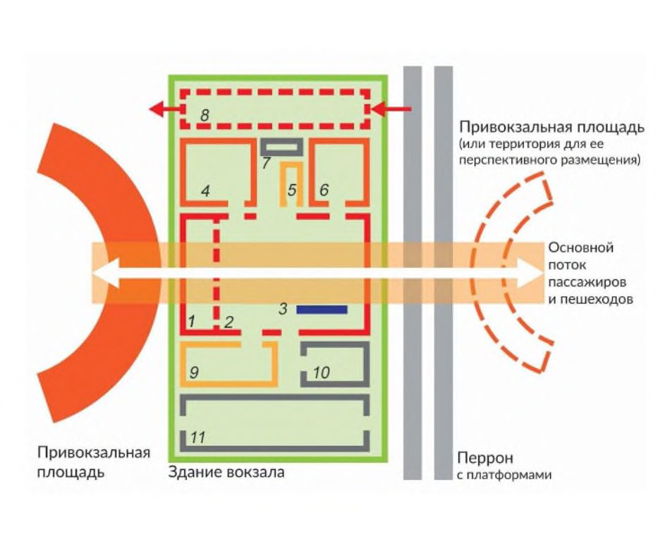

СП 417.1325800.2020 «Железнодорожные вокзальные комплексы. Правила проектировани»
О документе: разработчики, утверждение, регистрация, ключевые слова
СВОД ПРАВИЛ
СП 417.1325800.2020
Издание официальное
Москва 2020
1 ИСПОЛНИТЕЛЬ - Акционерное общество «Центральный научноисследовательский и проектно-экспериментальный институт промышленных зданий и сооружений» (АО «ЦНИИПромзданий»)
2 ВНЕСЕН Техническим комитетом по стандартизации ТК 465 «Строительство»
3 ПОДГОТОВЛЕН к утверждению Департаментом градостроительной деятельности и архитектуры Министерства строительства и жилищнокоммунального хозяйства Российской Федерации (Минстрой России)
4 УТВЕРЖДЕН приказом Министерства строительства и жилищнокоммунального хозяйства Российской Федерации от 30 декабря 2020 г. № 901/пр и введен в действие с 1 июля 2021 г.
5 ЗАРЕГИСТРИРОВАН Федеральным агентством по техническому регулированию и метрологии (Росстандарт). Пересмотр СП 417.1325800.2018 «Здания железнодорожных вокзалов. Правила проектирования»
В случае пересмотра (замены) или отмены настоящего свода правил соответствующее уведомление будет опубликовано в установленном порядке. Соответствующая информация, уведомление и тексты размещаются также в информационной системе общего пользования - на официальном сайте разработчика (Минстрой России) в сети Интернет
© Минстрой России, 2020
Настоящий нормативный документ не может быть полностью или частично воспроизведен, тиражирован и распространен в качестве официального издания на территории Российской Федерации без разрешения Минстроя России
Дата введения - 2021-07-01
УДК ОКС 91.040.10
Ключевые слова: здания вокзалов, железнодорожные вокзалы, железнодорожные вокзальные комплексы, проектирование
ИСПОЛНИТЕЛЬ
АО «ЦНИИПромзданий»
Генеральный директор
\_\_\_\_\_\_\_\_\_\_\_\_\_\_\_\_\_\_
Н.Г. Келасьев
Заместитель генерального директора, главный архитектор
\_\_\_\_\_\_\_\_\_\_\_\_\_\_\_\_\_\_
Д.К. Лейкина
Начальник отдела научных
исследований жилых и
общественных зданий
\_\_\_\_\_\_\_\_\_\_\_\_\_\_\_\_\_\_
Н.В. Дубынин
Главный специалист
\_\_\_\_\_\_\_\_\_\_\_\_\_\_\_\_\_\_
Ю.Л. Кашулина
НОЦ НКТИ РУТ (МИИТ)
Директор института управления
цифровых технологий РУТ (МИИТ)
\_\_\_\_\_\_\_\_\_\_\_\_\_\_\_\_\_\_
C.П. Вакуленко
Начальник НОЦ НКТИ РУТ (МИИТ)
\_\_\_\_\_\_\_\_\_\_\_\_\_\_\_\_\_\_
А.В. Колин
Инженер НОЦ НКТИ РУТ (МИИТ)
\_\_\_\_\_\_\_\_\_\_\_\_\_\_\_\_\_\_
А.А. Бакин
Инженер НОЦ НКТИ РУТ (МИИТ)
\_\_\_\_\_\_\_\_\_\_\_\_\_\_\_\_\_\_
П.А. Кузин
Введение
Настоящий свод правил разработан в целях обеспечения требований федерального закона от 30 декабря 2009 г. № 384-ФЗ «Технический регламент о безопасности зданий и сооружений» с учетом федеральных законов от 23 ноября 2009 г. № 261-ФЗ «Об энергосбережении и о повышении энергетической эффективности и о внесении изменений в отдельные законодательные акты Российской Федерации» и от 22 июля 2008 г. № 123-ФЗ «Технический регламент о требованиях пожарной безопасности».
Настоящий свод правил разработан в развитие СП 118.13330.2012 «СНиП 31-06-2009 Общественные здания и сооружения».
Пересмотр свода правил выполнен авторским коллективом: АО «ЦНИИПромзданий» (канд. архитектуры Д.К. Лейкина , канд. архитектуры Н.В. Дубынин , Ю.Л. Кашулина, В.В. Коновалова ), РУТ (МИИТ) (канд. техн. наук С.П. Вакуленко , А.В. Колин, А.А. Бакин, П.А. Кузин ), ФГБУ «ЦНИИП Минстроя России» (канд. техн. наук Д.Г. Пронин) , ПГУПС (д-р техн. наук, проф. Т.А. Белаш ).
1Область применения
2Нормативные ссылки
В настоящем своде правил использованы нормативные ссылки на следующие документы:
ГОСТ 12.2.233-2012 (ISO 5149:1993) Система стандартов безопасности труда. Системы холодильные холодопроизводительностью свыше 3,0 кВт. Требования безопасности
ГОСТ 12.4.026-2015 Система стандартов безопасности труда. Цвета сигнальные, знаки безопасности и разметка сигнальная. Назначение и правила применения. Общие технические требования и характеристики. Методы испытаний
ГОСТ 9238-2013 Габариты железнодорожного подвижного состава и приближения строений
Издание официальное
ЖЕЛЕЗНОДОРОЖНЫЕ ВОКЗАЛЬНЫЕ КОМПЛЕКСЫ Правила проектирования
Railway station complexes. Design rules
[ГОСТ 25772-83 Ограждения лестниц, балконов и крыш стальные. Общие технические условия](http://docs.cntd.ru/document/901709301)
ГОСТ 27751-2014 Надежность строительных конструкций и оснований. Основные положения
ГОСТ 30389-2013 Услуги общественного питания. Предприятия общественного питания. Классификация и общие требования
ГОСТ 30494-2011 Здания жилые и общественные. Параметры микроклимата в помещениях
ГОСТ 33942-2016 Услуги на железнодорожном транспорте. Обслуживание пассажиров. Термины и определения
ГОСТ 33966.1-2016 (EN 115-1:2008+A1:2010) Эскалаторы и пассажирские конвейеры. Требования безопасности к устройству и установке
ГОСТ Р 12.2.143-2009 Система стандартов безопасности труда. Системы фотолюминесцентные эвакуационные. Требования и методы контроля
ГОСТ Р 22.1.12-2005 Безопасность в чрезвычайных ситуациях. Структурированная система мониторинга и управления инженерными системами зданий и сооружений. Общие требования
ГОСТ Р 51303-2013 Торговля. Термины и определения
ГОСТ Р 51671-2015 Средства связи и информации технические общего пользования, доступные для инвалидов. Классификация. Требования доступности и безопасности
ГОСТ Р 51773-2009 Услуги торговли. Классификация предприятий торговли
ГОСТ Р 51885-2002 (ИСО 7001:1990) Знаки информационные для общественных мест
ГОСТ Р 52131-2019 Средства отображения информации знаковые для инвалидов. Технические требования
ГОСТ Р 52382-2010 (ЕН 81-72:2003) Лифты пассажирские. Лифты для пожарных
ГОСТ Р 52875-2018 Указатели тактильные наземные для инвалидов по зрению. Технические требования
ГОСТ Р 53246-2008 Информационные технологии. Системы кабельные структурированные. Проектирование основных узлов системы. Общие требования
ГОСТ Р 54984-2012 Освещение наружное объектов железнодорожного транспорта. Нормы и методы контроля.
ГОСТ Р 55555-2013 Платформы подъемные для инвалидов и других маломобильных групп населения. Требования безопасности и доступности. Часть 1. Платформы подъемные с вертикальным перемещением
ГОСТ Р 56461-2015 Безопасность транспортная. Общие требования
ГОСТ Р 58171-2018 Услуги на железнодорожном транспорте. Требования к обслуживанию пассажиров на вокзальных комплексах
ГОСТ Р 58320-2018 Электроустановки систем тягового электроснабжения железной дороги постоянного тока. Требования к заземлению
ГОСТ Р 58321-2018 Электроустановки систем тягового электроснабжения железной дороги переменного тока. Требования к заземлению
ГОСТ Р ЕН 13779-2007 Вентиляция в нежилых зданиях. Технические требования к системам вентиляции и кондиционирования
СП 1.13130.2020 Системы противопожарной защиты. Эвакуационные пути и выходы
СП 2.13130.2020 Системы противопожарной защиты. Обеспечение огнестойкости объектов защиты
СП 3.13130.2009 Системы противопожарной защиты. Система оповещения и управления эвакуацией людей при пожаре. Требования пожарной безопасности
СП 4.13130.2013 Системы противопожарной защиты. Ограничение распространения пожара на объектах защиты. Требования к объемнопланировочным и конструктивным решениям (с изменением № 1)
СП 6.13130.2013 Системы противопожарной защиты. Электрооборудование. Требования пожарной безопасности
СП 7.13130.2013 Отопление, вентиляция и кондиционирование. Требования пожарной безопасности (с изменениями № 1, № 2)
СП 8.13130.2020 Системы противопожарной защиты. Наружное противопожарное водоснабжение. Требования пожарной безопасности
СП 10.13130.2020 Системы противопожарной защиты. Внутренний противопожарный водопровод. Нормы и правила проектирования
СП 12.13130.2009 Определение категорий помещений, зданий и наружных установок по взрывопожарной и пожарной опасности (с изменением № 1)
СП 15.13330.2012 «СНиП II-22-81* Каменные и армокаменные конструкции» (с изменениями № 1, № 2, № 3)
СП 16.13330.2017 «СНиП II-23-81* Стальные конструкции» (с изменениями № 1, № 2)
СП 20.13330.2016 «СНиП 2.01.07-85* Нагрузки и воздействия» (с изменениями № 1, № 2)
СП 28.13330.2017 «СНиП 2.03.11-85 Защита строительных конструкций от коррозии» (с изменениями № 1, № 2)
СП 29.13330.2011 «СНиП 2.03.13-88 Полы» (с изменением № 1)
СП 30.13330.2016 «СНиП 2.04.01-85* Внутренний водопровод и канализация зданий» (с изменением № 1)
СП 31.13330.2012 «СНиП 2.04.02-84* Водоснабжение. Наружные сети и сооружения» (с изменениями № 1, № 2, № 3, № 4, № 5)
СП 35.13330.2011 «СНиП 2.05.03-84* Мосты и трубы» (с изменениями № 1, № 2)
СП 42.13330.2016 «СНиП 2.07.01-89* Градостроительство. Планировка и застройка городских и сельских поселений» (с изменениями № 1, № 2)
СП 44.13330.2011 «СНиП 2.09.04-87* Административные и бытовые здания» (с изменениями № 1, № 2, № 3)
СП 47.13330.2016 «СНиП 11-02-96 Инженерные изыскания для строительства. Основные положения»
СП 51.13330.2011 «СНиП 23-03-2003 Защита от шума» (с изменением № 1)
СП 52.13330.2016 «СНиП 23-05-95* Естественное и искусственное освещение» (с изменением № 1)
СП 59.13330.2016 «СНиП 35-01-2001 Доступность зданий и сооружений для маломобильных групп населения»
- СП 60.13330.2016 «СНиП 41-01-2003 Отопление, вентиляция и кондиционирование воздуха» (с изменением № 1)
СП 63.13330.2018 «СНиП 52-01-2003 Бетонные и железобетонные конструкции. Основные положения» (с изменением № 1)
СП 64.13330.2017 «СНиП II-25-80 Деревянные конструкции» (с изменениями № 1, № 2)
СП 104.13330.2016 «СНиП 2.06.15-85 Инженерная защита территории от затопления и подтопления»
СП 113.13330.2016 «СНиП 21-02-99* Стоянки автомобилей» (с изменением № 1)
СП 116.13330.2012 «СНиП 22-02-2003 Инженерная защита территорий, зданий и сооружений от опасных геологических процессов. Основные положения»
СП 118.13330.2012 «СНиП 31-06-2009 Общественные здания и сооружения» (с изменениями № 1, № 2, № 3, № 4)
СП 119.13330.2017 «СНиП 32-01-95 Железные дороги колеи 1520 мм» (с изменением № 1)
СП 131.13330.2018 «СНиП 23-01-99* Строительная климатология»
СП 132.13330.2011 Обеспечение антитеррористической защищенности зданий и сооружений. Общие требования проектирования
СП 133.13330.2012 Сети проводного радиовещания и оповещения в зданиях и сооружениях. Нормы проектирования (с изменением № 1)
СП 134.13330.2012 Системы электросвязи зданий и сооружений. Основные положения проектирования (с изменениями № 1, № 2)
СП 136.13330.2012 Здания и сооружения. Общие положения проектирования с учетом доступности для маломобильных групп населения (с изменением № 1)
СП 138.13330.2012 Общественные здания и сооружения, доступные маломобильным группам населения. Правила проектирования (с изменением № 1)
СП 140.13330.2012 Городская среда. Правила проектирования для маломобильных групп населения (с изменением № 1)
СП 153.13130.2013 Инфраструктура железнодорожного транспорта. Требования пожарной безопасности (с изменением № 1)
СП 154.13130.2013 Встроенные подземные автостоянки. Требования пожарной безопасности
СП 160.1325800.2014 Здания и комплексы многофункциональные. Правила проектирования (с изменением № 1)
СП 225.1326000.2014 Станционные здания, сооружения и устройства
СП 227.1326000.2014 Пересечения железнодорожных линий с линиями транспорта и инженерными сетями
СП 239.1326000.2015 Системы информирования пассажиров, оповещения работающих на путях и парковой связи на железнодорожном транспорте
СП 248.1325800.2016 Сооружения подземные. Правила проектирования
СП 256.1325800.2016 Электроустановки жилых и общественных зданий. Правила проектирования и монтажа (с изменениями № 1, № 2, № 3)
СП 258.1311500.2016 Объекты религиозного назначения. Требования пожарной безопасности
СП 370.1325800.2017 Устройства солнцезащитные зданий. Правила проектирования
СП 395.1325800.2018 Транспортно-пересадочные узлы. Правила проектирования
СП 396.1325800.2018 Улицы и дороги населенных пунктов. Правила градостроительного проектирования (с изменением № 1)
СП 426.1325800.2018 Конструкции фасадные светопрозрачные зданий и сооружений. Правила проектирования
СП 439.1325800.2018 Здания и сооружения. Правила проектирования аварийного освещения
СП 484.1311500.2020 Системы противопожарной защиты. Системы пожарной сигнализации и автоматизация систем противопожарной защиты. Нормы и правила проектирования
СП 486.1311500.2020 Системы противопожарной защиты. Перечень зданий, сооружений, помещений и оборудования, подлежащих защите автоматическими установками пожаротушения и системами пожарной сигнализации. Требования пожарной безопасности
СанПиН 2.1.3.2630-10 Санитарно-эпидемиологические требования к организациям, осуществляющим медицинскую деятельность
СанПиН 2.1.7.1322-03 Гигиенические требования к размещению и обезвреживанию отходов производства и потребления
СанПиН 2.1.7.3550-19 Санитарно-эпидемиологические требования к содержанию территорий муниципальных образований
СанПиН 2.2.1/2.1.1.1278-03 Гигиенические требования к естественному, искусственному и совмещенному освещению жилых и общественных зданий
СанПиН 2.2.4.548-96 Гигиенические требования к микроклимату производственных помещений
СанПиН 2.3/2.4.3590-20 Санитарно-эпидемиологические требования к организации общественного питания населения
СН 2.2.4/2.1.8.562-96 Шум на рабочих местах, в помещениях жилых, общественных зданий и на территории жилой застройки
СН 2.2.4/2.1.8.566-96 Производственная вибрация, вибрация в помещениях жилых и общественных зданий
Примечание - При пользовании настоящим сводом правил целесообразно проверить действие ссылочных документов в информационной системе общего пользования - на официальном сайте федерального органа исполнительной власти в сфере стандартизации в сети Интернет или по ежегодному информационному указателю «Национальные стандарты», который опубликован по состоянию на 1 января текущего года, и по выпускам ежемесячного информационного указателя «Национальные стандарты» за текущий год. Если заменен ссылочный документ, на который дана недатированная ссылка, то рекомендуется использовать действующую версию этого документа с учетом всех внесенных в данную версию изменений. Если заменен ссылочный документ, на который дана датированная ссылка, то рекомендуется использовать версию этого документа с указанным выше годом утверждения (принятия). Если после утверждения настоящего свода правил в ссылочный документ, на который дана датированная ссылка, внесено изменение, затрагивающее положение, на которое дана ссылка, то это положение рекомендуется применять без учета данного изменения. Если ссылочный документ отменен без замены, то положение, в котором дана ссылка на него, рекомендуется применять в части, не затрагивающей эту ссылку. Сведения о действии сводов правил целесообразно проверить в Федеральном информационном фонде стандартов.
3Термины, определения и сокращения
В настоящем своде правил использованы термины по СП 59.13330, СП 118.13330, ГОСТ 33942, а также следующие термины с соответствующими определениями:
- 3.1.1
- железнодорожного вокзального комплекса на железнодорожной станции (пассажирском остановочном пункте), здание или комплекс зданий и сооружений, состоящих из помещений, предназначенных для обслуживания пассажиров железнодорожного транспорта и других пользователей услугами железнодорожного вокзального комплекса, размещения рабочих мест и служебных помещений обслуживающего персонала .Источник: ГОСТ 33942-2016, пункт 3.7
- 3.1.2железнодорожный вокзальный комплекс
- Совокупность железнодорожного вокзала и прилегающих к нему территорий, зданий, сооружений и других объектов, конструктивно, технологически или иным образом связанных с железнодорожным вокзалом и подчиненных единому режиму управления, функционирования и развития.Источник: ГОСТ 33942-2016, пункт 3.8
- 3.1.3пассажирский конвейер
- Установка с механическим приводом для перемещения пассажиров, в которой непрерывная несущая поверхность пластин или ленты остается параллельной направлению ее движения.Источник: ГОСТ 33966.1-2016, пункт 3.1.2
- 3.1.4 пассажирский перрон
- Часть территории железнодорожного вокзала, железнодорожной станции или остановочного пункта, включающая платформы, распределительные площадки и переходы, предназначенная для накопления и безопасного прохода пассажиров к платформам.
- 3.1.5 перронная касса (касса «на выход»)
- Касса, расположенная за линией турникетов со стороны платформ, предназначенная для приобретения билетов на станции окончания поездки
- 3.1.6 привокзальная площадь
- Прилегающая к земельному участку размещения железнодорожного вокзала территория с подъездами и подходами к вокзалу и предусмотренными по заданию на проектирование объектами инфраструктуры железнодорожного транспорта и элементами благоустройства.
- 3.1.7 пропускная способность вокзала
- Эксплуатационный показатель вокзала, определяемый расчетным потоком пассажиров и прочих потребителей вокзальных услуг, который может быть обслужен в течение расчетного часа (пикового пассажиропотока).
- 3.1.8 расчетная вместимость вокзала
- Число людей, которое может быть одновременно размещено в помещениях здания вокзала, предназначенных для обслуживания пассажиров (за исключением обслуживающего персонала). АКХ - автоматическая камера хранения; АСОКУПЭ - автоматизированная система оплаты, контроля и учета проезда в электропоездах; БПА - билетопечатающий автомат; ЗОЛД - зал официальных лиц и делегаций; КДО - комната длительного отдыха; КМиР - комната матери и ребенка; МГН - маломобильные группы населения; СКХ - стационарная камера хранения; ТТС - транзакционный терминал самообслуживания.
4Общие положения
- преимущественно 1) дальние сообщения (в том числе международные сообщения);
- преимущественно 1) пригородные, пригородно-городские и внутригородские сообщения (в том числе скорые пригородные);
- объединенные железнодорожные вокзалы, сочетающие признаки нескольких типов вокзальных комплексов.
\_\_\_\_\_\_\_\_\_\_\_\_\_\_\_\_\_\_\_\_\_\_\_\_\_\_\_\_\_\_\_\_\_\_\_\_\_\_\_\_\_\_\_\_\_\_\_\_\_\_
1) При доле 90 % и более в пассажирообороте пассажиров одной из категорий.
Примечание - Высшая категория - внеклассный, низшая -класс IV.
- с боковым расположением вокзала;
- с островным расположением вокзала;
- с торцевым расположением вокзала (на пассажирских станциях тупикового типа);
- русловой (надпутный или подпутный), когда вокзал расположен над или под перронными приемо-отправочными путями или пассажирскими платформами;
- комбинированный, объединяющий признаки нескольких типов вокзальных комплексов.
- малые с расчетной вместимостью - 50, 100, 150 и 200 пассажиров;
- средние » » » - от 201 до 700 пассажиров
(включительно);
- большие » » » - от 701 до 1500 пассажиров (включительно);
- крупные » » » - от 1501 пассажира.
\_\_\_\_\_\_\_\_\_\_\_\_\_\_\_\_\_\_\_\_\_\_\_\_\_\_\_\_\_\_\_\_\_\_\_\_\_\_\_\_\_\_\_\_\_\_\_\_\_\_
1) См. сноску в 4.1.
Проектирование вокзалов с расчетной вместимостью 50 и менее пассажиров следует осуществлять в соответствии с заданием на проектирование.
В зависимости от величины годового расчетного потока вокзалы, обслуживающие пригородные, пригородно-городские и внутригородские сообщения, подразделяют на следующие:
- малые - менее 0,75 млн чел.;
- средние - от 0,75 до 5,0 млн чел. (включительно);
- большие - от 5,0 от 20,0 млн чел. (включительно);
- крупные - более 20,0 млн чел.
- привокзальную площадь или территорию, примыкающую к железнодорожной станции;
- платформу (платформы) или пассажирский перрон с платформами;
- пассажирское здание железнодорожного вокзала (одно и более) (далее - вокзал).
Дополнительно по заданию на проектирование и в зависимости от планировочных решений железнодорожные вокзальные комплексы могут включать:
- пешеходные переходы в одном или разных уровнях (конкорсы, пешеходные мосты, тоннели, настилы и пр.);
- вспомогательные здания и сооружения санитарно-бытового, общественно-делового, культурно-досугового, торгового, подсобного и технического назначения;
- малые архитектурные формы (по ГОСТ 33942).
5Требования к земельным участкам размещения железнодорожных вокзальных комплексов
5.1Общие требования
(при необходимости) и с учетом перспективы развития железнодорожного вокзального комплекса.
5.2Планировочные требования к привокзальной площади
- передвижения пешеходов;
- движения транспорта.
Дополнительно по заданию на проектирование на привокзальной площади предусматривают:
- зону остановочных пунктов общественного транспорта для посадки-высадки пассажиров;
- зону кратковременной остановки личного автотранспорта;
- стоянки общественного транспорта;
- стоянки и (или) зоны посадки-высадки из такси;
- велопарковки;
- стоянки личных автомобилей;
- стоянки длительного хранения автомобилей пассажиров;
- стоянки автомобилей обслуживающего персонала.
При функциональном зонировании привокзальной площади необходимо обеспечить минимальное число пересечений транспортных и пешеходных потоков.
При наличии привокзальных площадей с двух сторон от железнодорожных путей допускается предусматривать функциональные зоны в зависимости от градостроительных условий размещения.
Зоны привокзальной площади необходимо располагать в следующем порядке от здания вокзала:
- велопарковка;
- остановочные пункты общественного пассажирского транспорта;
- зона посадки-высадки из такси;
- стоянки личных автомобилей.
Ширина эскалаторов и пассажирских конвейеров на путях основных потоков людей должна составлять не менее 1,1 м.
- для размещения павильона ожидания согласно СП 396.1325800.2018 (пункт 6.16);
- ожидания пассажиров общественного транспорта исходя из расчетной площади 0,5 м² на одного пассажира в час наибольшего пассажиропотока на остановке.
Зоны прохода и ожидания пассажиров должны быть раздельными.
При размещении уборной на прилегающих земельных участках подход к ней следует организовывать по пешеходной дорожке шириной не менее 1,5 м.
Отдельно стоящие общественные уборные с обустройством выгребных ям следует размещать на расстоянии не менее 50 м от пассажирских зданий.
- пассажиропотока в пиковые периоды времени, предусматривая, что на 500 чел. следует принимать один прибор (за один прибор принимаются один унитаз или два писсуара);
- пропускной способности одной туалетной кабины не более 25 чел./ч.
5.3Требования к перронам, платформам и пешеходным переходам
Необходимо предусматривать одну или несколько двустворчатых
СП 417.1325800.2020 дверей шириной 1,2-1,5 м с одной створкой не менее 0,9 м для прохода МГН и пассажиров с крупногабаритной ручной кладью, велосипедами,
По заданию на проектирование на железнодорожном вокзальном комплексе допускается предусматривать турникеты только на вход.
Тип платформы по высоте принимают в соответствии с заданием на проектирование.
Опоры высоких пассажирских платформ следует располагать на расстоянии не менее 2120 мм от оси пути.
Платформы со стороны, где не предусмотрены посадка и высадка пассажиров, должны иметь ограждения высотой не менее 0,9 м.
- зоны безопасности;
- зоны ожидания;
- зоны прохода.
Зону безопасности рассчитывают согласно таблице 5.1.
Таблица 5.1
| Максимальная скорость безостановочного проезда составов по пути, смежному с платформой, км/ч | Расчетная ширина зоны безопасности для низких платформ, м | Расчетная ширина зоны безопасности для высоких платформ, м |
|---|---|---|
| 0-140 | 1,0 | 0,75 |
| 141-200 | 2,0 | 2,0 |
| 201-250 | 2,3 | 2,0 |
Ширину зоны ожидания следует принимать в зависимости от длины платформы:
- площадь 1 м² на ожидающего поезда пассажира в час наибольшего пассажиропотока - для платформ длиной менее 200 м;
- ширина 0,5 м на каждые 100 ожидающих поезд пассажиров в час наибольшего пассажиропотока - для платформ длиной более 200 м.
Ширина зоны прохода должна составлять не менее 2 м (при необходимости обеспечения проезда служебного автотранспорта по платформе - не менее 3 м).
Таблица 5.2
| Длина объекта вдоль платформы, м | Ширина прохода в свету между объектом и ограничительной линией, м | Ширина прохода в свету между объектом и ограничительной линией в стесненных условиях, м |
|---|---|---|
| Менее 1 | 1,2 | 0,8 |
| 1-10 | 1,6 | 1,6 |
| Более 10 | 2,0 | 1,6 |
При размещении объектов, части которых расположены над зоной прохода пассажиров, необходимо обеспечивать высоту прохода не менее 2,3 м.
Островные платформы допускается проектировать с уклоном 1° к железнодорожным путям без устройства водоприемного лотка.
В случае отсутствия информации о перспективной длине пассажирских составов следует принимать длину платформы по максимальной длине состава с запасом 15 м. Допускается принимать величину запаса 10 м в случае отсутствия остановки поездов локомотивной тяги в пятилетней перспективе.
На вновь сооружаемых станциях необходимо предусмотреть возможность удлинения платформ для пригородных, пригородногородских и внутригородских поездов не менее чем на 300 м, для поездов дальних сообщений -не менее чем на 650 м (по заданию на проектирование допускается удлинение до 1000 м).
Длина платформ, выполненных из сборных железобетонных элементов, должна быть кратна 6 м.
В случае организации единого безбарьерного пространства платформы с привокзальной площадью в одном уровне платформа должна быть отделена тактильно-контрастным наземным указателем по ГОСТ Р 52875 или изменением фактуры поверхности пешеходного пути с подобными характеристиками.
Навесы над платформами следует проектировать с учетом ГОСТ 9238.
Для островных платформ шириной более 4,5 м следует предусматривать навесы с опорами, не создающими помех для движения пассажиров, уборочных и других механизмов. Навесы для островных платформ шириной менее 4,5 м допускается предусматривать по заданию на проектирование.
Если ширина платформы составляет 20 м и более, ширину навеса допускается принимать менее 20 м.
Площадь навеса над платформой на малых и средних вокзалах устанавливается исходя из числа пассажиров, одновременно находящихся на платформе, и расчета 0,5 м² навеса на одного пассажира; площадь навеса следует принимать не менее 9 м² .
На больших и крупных вокзалах навес над платформой необходимо устанавливать вдоль всей длины платформы.
СП 417.1325800.2020 учетом доступности для МГН), а у боковых платформ, кроме того, дополнительные сходы на каждые 100 м длины платформы.
- в одном уровне с путями (в уровне верха головки рельса);
- в разных уровнях над путями и платформами (пешеходные мосты, конкорсы) или под путями и платформами (пешеходные тоннели, подземные распределительные залы).
Минимальную ширину вокзальных переходов следует принимать не менее ширины входящих в их состав лестниц, а также не менее:
- для пешеходных тоннелей - 3 м;
- для пешеходных мостов - 2,25 м;
- для переходов на уровне верха головок рельсов - 3 м (при осуществлении попутных движению пассажиров багажных и почтовых операций - 4 м).
В пассажирских зонах вокзального комплекса в направлении основных пешеходных потоков необходимо предусмотреть возможность перемещения без изменения высоты либо по пандусам.
Площадки следует размещать на поверхности с уклоном от входа в переход, либо организовывать превышение с подъемом без ступеней. Для предотвращения попадания атмосферных осадков на лестницу входы тоннелей должны иметь навесы или павильоны.
В надземных и подземных переходах допускается устанавливать скамейки при обеспечении достаточной ширины прохода согласно 5.3.28.
5.4Требования к вспомогательным зданиям и сооружениям
- гараж средств малой механизации;
- пункты забора и слива воды;
- места, предназначенные для мойки и дезинфекции урн, хранения и очистки уборочной техники, оборудования и уборочного инвентаря, расходных материалов, химических и дезинфицирующих средств;
- места для накопления твердых коммунальных отходов и иных отходов, образуемых в процессе работы железнодорожного вокзала, с устройством подъезда специального транспорта для вывоза данных отходов;
- места для накопления твердых коммунальных отходов и иных отходов, образуемых при в процессе технологическом процессе работы железнодорожного вокзала, с устройством подъезда специального автотранспорта для вывоза данных отходов.
6Требования к объемно-планировочным и конструктивным решениям зданий железнодорожных вокзалов
6.1Требования к объемно-планировочным решениям зданий железнодорожных вокзалов
6.1.1 Общие требования
6.1.1.1 При проектировании вокзалов следует соблюдать требования СП 118.13330.2012 (разделы 5, 6 и 7).
При объединении вокзала с объектами иного назначения (торгового, культурно-досуговой деятельности, бизнес-центра, гостиницы, отделения связи и др.) следует соблюдать требования СП 160.1325800.
По заданию на проектирование допускается блокировать вокзал с другими служебными, техническими и производственными объектами железнодорожного вокзального комплекса при условии соблюдения функциональных, санитарно-гигиенических, противопожарных требований и требований транспортной безопасности.
6.1.1.2 Вокзалы для пассажиров дальнего и пригородного сообщения могут проектироваться:
- отдельными - предназначенным для обслуживания пассажиров только дальних или только пригородных сообщений;
- объединенными -предназначенными для совместного обслуживания пассажиров как дальних сообщений, так и пригородных.
6.1.1.3 Планировка и оборудование зданий вокзалов по обеспечению беспрепятственного доступа МГН должны соответствовать СП 59.13330.
6.1.1.4 Зоны обслуживания МГН следует размещать в одном уровне с доступным для них входом в вокзал согласно СП 59.13330. При перепаде высот при входе кроме лестниц следует предусматривать пандус или лифт, при реконструкции допускается применять подъемные платформы вертикального перемещения грузоподъемностью 500 кг по ГОСТ Р 55555.
В стесненных условиях и в крупных вокзальных комплексах допускается размещение вспомогательных зон обслуживания МГН на других этажах здания вокзала при обеспечении беспрепятственного доступа в соответствии с требованиями СП 59.13330.
6.1.1.5 При размещении вокзалов в зданиях - памятниках истории и культуры - необходимо соблюдать требования [6] в соответствии с архитектурно-реставрационным заданием.
6.1.1.6 Требования к проектированию вокзалов, обслуживающих, в том числе, международные сообщения, приведены в [17].
6.1.1.7 В планировочных решениях крупных и объединенных вокзалов необходимо предусматривать разделение потоков пассажиров по категориям (в зависимости от дальности следования) и направлениям (отправления, прибытия).
На пешеходных путях пассажиров ширину полосы движения в одном направлении принимают равной 1 м.
6.1.1.8 На главных пешеходных путях вокзалов с пассажиропотоками 25 чел./мин и более и протяженностью более 100 м следует предусматривать пассажирские конвейеры по ГОСТ 33966.1.
6.1.1.9 Помещения и функциональные зоны обслуживания пассажиров в здании вокзала должны быть сгруппированы вокруг центрального операционного зала.
В крупных и больших вокзалах при организации разделения потоков допускается проектировать два зала - зал отправления и зал прибытия, по заданию на проектирование выделяют отдельный зал для МГН с зоной отдыха и медпунктом.
6.1.1.10 Помещения и оборудование вокзала следует располагать с учетом функциональной последовательности совершаемых пассажирами операций, при которой возвратные движения, пересечения интенсивных пешеходных потоков и массовое скопление пассажиров в отдельных местах вокзала должны быть сведены к минимуму.
Схема функционально-планировочных взаимосвязей вокзала приведена в приложении Е.
6.1.1.11 Для пассажиров прибытия следует предусматривать наиболее короткие пути выхода к остановочным пунктам общественного и личного транспорта с исключением пересечения с потоками пассажиров отправления и минуя основные помещения вокзала.
6.1.1.12 При проектировании функциональных зон вокзала, предназначенных для оказания услуг, допускающих возникновение очередей (билетные кассы, торговые зоны и пр.), следует предусматривать зоны накопления, исключающие создание препятствий на основных пешеходных путях.
6.1.1.13 В подвальных этажах вокзалов допускается размещать камеры хранения, санитарно-бытовые помещения для пассажиров и персонала, подсобные и технические помещения, приведенные в СП
118.13330.2012 (приложение Д), с учетом требований пожарной безопасности (раздел 7 настоящего свода правил).
6.1.1.14 Пассажирские помещения допускается размещать в цокольных этажах вокзалов, кроме комнат пассажиров с детьми, КМиР и КДО, при условии обеспечения пожарной безопасности и соблюдения санитарно-гигиенических требований размещения персонала.
6.1.1.15 Входы и выходы в вокзале необходимо оборудовать конструкциями для защиты от атмосферных осадков (навесами, козырьками).
Для соответствия требуемым параметрам скорости движения воздуха в зоне пассажирского потока согласно ГОСТ 30494 входы и выходы в вестибюле вокзала следует проектировать по СП 118.13330.2012 (пункт 4.24).
В климатических районах строительства III и IV (по СП 131.13330) допускается предусматривать съемные или фиксируемые в открытом положении двери для теплого времени года.
6.1.1.16 При проектировании вновь строящихся зданий вокзалов минимальную высоту помещений от пола до низа выступающих конструкций перекрытия или покрытия следует принимать, м, не менее:
3,6 - для распределительных и операционных залов;
3,3 - для зала ожидания;
3 - для прочих помещений (зон) обслуживания пассажиров;
2,5 - для остальных надземных помещений, включая технические.
Примечание - При реконструкции вокзалов высоту технических помещений допускается уменьшать при обеспечении технических требований к размещаемому оборудованию.
6.1.1.17 При объемно-планировочном решении вокзала с обслуживанием пассажиров в нескольких уровнях или этажах следует предусматривать устройство эскалаторов и пассажирских лифтов, число которых принимают по расчету, но не менее одного лифта и двух эскалаторов, с соблюдением требований СП 59.13330 и ГОСТ Р 52382.
6.1.1.18 При перепаде высот более 5 м в железнодорожном вокзальном комплексе на путях с потоком пассажиров не менее 3000 чел./ч следует предусматривать эскалаторы и лифты, с потоком пассажиров не менее 800 чел./ч - лифты.
При перепаде высот более 10 м необходимо предусматривать пассажирские и грузовые лифты.
6.1.1.19 Покрытия зданий вновь строящихся вокзалов следует проектировать с внутренними водостоками. Применение наружных водостоков допускается для малых вокзалов.
6.1.1.20 В вокзалах, расположенных в климатических районах строительства III и IV (по СП 131.13330), для отдыха и ожидания пассажиров в наиболее напряженные по пассажиропотоку летние месяцы допускается использовать площадки, обеспеченные затенением (плоские кровли, балконы, террасы). Их площадь и конструкции должны быть рассчитаны с резервом не менее 25 % общего расчетного числа пассажиров и посетителей.
6.1.1.21 В проектах вокзалов, расположенных в южных районах строительства (климатические районы III и IV согласно СП 131.13330), необходимо предусматривать солнцезащиту помещений с учетом СП 370.1325800 и сквозное проветривание основных пассажирских помещений.
6.1.1.22 В проектах вокзалов, расположенных в районах Крайнего Севера (климатические подрайоны IА, IБ, IГ согласно СП 131.13330), необходимо предусматривать защиту основных пассажирских и служебных помещений от преобладающих ветров.
6.1.1.23 Рекомендации по обеспечению комфортной акустической среды при проектировании помещений для пребывания пассажиров приведены в [26]. Звукопоглощение облицовкой должно соответствовать СП 51.13330.
6.1.1.24 В вокзалах с сезонным характером работы следует предусматривать возможность перевода неиспользуемых помещений в режим экономичной эксплуатации с ограничением доступа пассажиров и посетителей, снижением уровня освещения и отопления до нижней границы соответствующих нормативных значений, приведенных в СП 60.13330 и СанПиН 2.2.1/2.1.1.1278.
Допускается сезонное изменение режима использования и функционального назначения помещений.
6.1.1.25 Помещения вокзалов следует разделять на группы:
- помещения (зоны) обслуживания пассажиров;
- служебно-административные помещения (зоны) для размещения обслуживающего персонала;
- подсобные и технические помещения (зоны) для размещения инженерного и технологического оборудования.
6.1.1.26 В случае проведения в здании вокзала пограничного, санитарно-карантинного, ветеринарного, фитосанитарного, иммиграционного контроля и таможенного досмотра пассажиров, ручной клади, домашних животных, следующих через государственную границу, необходимо выделять отдельный зал с соответствующими терминалами и проходами к поездам международных сообщений только по территории, находящейся под контролем пограничных и таможенных служб.
6.1.2 Требования к помещениям (зонам) обслуживания пассажиров
6.1.2.1 Обязательными в зоне обслуживания пассажиров должны быть помещения для билетно-кассового и санитарно-гигиенического обслуживания.
6.1.2.2 Размещение билетных касс, БПА и ТТС следует предусматривать в кассовом зале.
Билетные кассы следует располагать группами, объединяя их по категориям обслуживаемых пассажиров, выделяя в каждой группе 5 % касс для обслуживания МГН.
По заданию на проектирование, а также при разделении потоков пассажиров пригородного и дальнего направлений проектируют несколько кассовых залов (зон), разделенных по видам направлений.
6.1.2.3 Число билетных касс для вокзалов дальних сообщений следует определять по таблице 6.1.
Таблица 6.1
| Вместимость вокзала дальних сообщений, чел. | 50 | 100 | 200 | 300 | 500 | 700 | 900 | 1200 | 1500 | Св. 1500 |
|---|---|---|---|---|---|---|---|---|---|---|
| Билетные кассы, число ячеек | 1 | 2 | 3 | 4 | 5 | 6 | 8 | 10 | 12 | По заданию на проектирование |
| Примечание - Для промежуточных значений расчетной вместимости показатели следует принимать по интерполяции. | Примечание - Для промежуточных значений расчетной вместимости показатели следует принимать по интерполяции. | Примечание - Для промежуточных значений расчетной вместимости показатели следует принимать по интерполяции. | Примечание - Для промежуточных значений расчетной вместимости показатели следует принимать по интерполяции. | Примечание - Для промежуточных значений расчетной вместимости показатели следует принимать по интерполяции. | Примечание - Для промежуточных значений расчетной вместимости показатели следует принимать по интерполяции. | Примечание - Для промежуточных значений расчетной вместимости показатели следует принимать по интерполяции. | Примечание - Для промежуточных значений расчетной вместимости показатели следует принимать по интерполяции. | Примечание - Для промежуточных значений расчетной вместимости показатели следует принимать по интерполяции. | Примечание - Для промежуточных значений расчетной вместимости показатели следует принимать по интерполяции. | Примечание - Для промежуточных значений расчетной вместимости показатели следует принимать по интерполяции. |
Число билетных касс для вокзалов пригородных сообщений следует определять по таблице 6.2.
Таблица 6.2
| Вместимость вокзала пригородных сообщений, чел. | 100 | 200 | 300 | 500 | 700 | 900 | 1200 | Св. 1500 |
|---|---|---|---|---|---|---|---|---|
| Билетные кассы, число ячеек | 1 | 2 | 2 | 3 | 3 | 4 | 4 | По заданию на проектирование |
| Примечание - Для промежуточных значений расчетной вместимости показатели следует принимать по интерполяции. | Примечание - Для промежуточных значений расчетной вместимости показатели следует принимать по интерполяции. | Примечание - Для промежуточных значений расчетной вместимости показатели следует принимать по интерполяции. | Примечание - Для промежуточных значений расчетной вместимости показатели следует принимать по интерполяции. | Примечание - Для промежуточных значений расчетной вместимости показатели следует принимать по интерполяции. | Примечание - Для промежуточных значений расчетной вместимости показатели следует принимать по интерполяции. | Примечание - Для промежуточных значений расчетной вместимости показатели следует принимать по интерполяции. | Примечание - Для промежуточных значений расчетной вместимости показатели следует принимать по интерполяции. | Примечание - Для промежуточных значений расчетной вместимости показатели следует принимать по интерполяции. |
Доля ТТС, БПА и касс определяется заданием на проектирование с учетом того, что в одном кассовом зале необходима установка минимум одной кассы.
Допускается для определения числа билетных касс пригородных и дальних сообщений, ТТС и БПА пользоваться методикой расчета, приведенной в приложении В.
6.1.2.4 Билетные кассы следует предусматривать в виде кабинкиосков или, по заданию на проектирование, касс открытого типа.
Требования к объемно-планировочным решениям билетных касс приведены в [24].
6.1.2.5 Площадь билетных касс пригородных сообщений следует принимать не менее 4 м² , дальнего сообщения - не менее 6 м² .
Перед билетными кассами необходимо предусматривать свободную зону накопления пассажиров глубиной, м, не менее:
3 - на вокзалах вместимостью до 500 пассажиров;
4 - на вокзалах вместимостью 500 пассажиров и более.
6.1.2.6 Зоны накопления пассажиров перед кассами открытого типа должны быть оборудованы поручнями-ограждениями.
6.1.2.7 На больших и крупных вокзалах в кассовых залах (зонах) дальних сообщений по заданию на проектирование допускается предусматривать систему электронной очереди, рассчитывая площадь накопления с увеличением ее на 30 % для размещения сидячих мест ожидания.
6.1.2.8 Для пригородных сообщений по заданию на проектирование на вокзалах следует предусматривать применение АСОКУПЭ.
6.1.2.9 При наличии турникетов со стороны перрона организуются перонные кассы (кассы «на выход»), не входящие в расчетное число касс/БПА общего пользования. Необходимо принимать не менее одной перонной кассы (кассы «на выход») на каждый изолированный контур, оборудованный турникетами согласно методике, приведенной в В.3 приложения В.
Перед турникетами со стороны, противоположной перрону, по заданию на проектирование допускается установка дополнительных билетных касс и БПА, не входящих в число расчетных.
6.1.2.10 Уборные в вокзалах должны предусматриваться на расстоянии не более 75 м от любого пассажирского помещения.
6.1.2.11 Уборные следует проектировать раздельными (мужские и женские) без непосредственного выхода в вестибюль, операционный, распределительный, кассовый зал, зал ожидания, объединенный пассажирский зал.
Двери в кабинах уборных должны открываться наружу.
Число универсальных и доступных кабин, предусмотренных для МГН, следует принимать по СП 59.13330.
В малых вокзалах при расчетном числе приборов два и менее допускается проектировать уборные с универсальными кабинами, доступными для МГН, предназначенные для общего пользования.
6.1.2.12 Площадь уборных для пассажиров и общее число санитарных приборов следует принимать в зависимости от расчетной вместимости согласно таблицам 6.3 и 6.4.
Таблица 6.3
| Наименование помещения | Единица измере- ния | Расчетная вместимость, чел., вокзалов для дальних пассажирских сообщений | Расчетная вместимость, чел., вокзалов для дальних пассажирских сообщений | Расчетная вместимость, чел., вокзалов для дальних пассажирских сообщений | Расчетная вместимость, чел., вокзалов для дальних пассажирских сообщений | Расчетная вместимость, чел., вокзалов для дальних пассажирских сообщений | Расчетная вместимость, чел., вокзалов для дальних пассажирских сообщений | Расчетная вместимость, чел., вокзалов для дальних пассажирских сообщений | Расчетная вместимость, чел., вокзалов для дальних пассажирских сообщений | Расчетная вместимость, чел., вокзалов для дальних пассажирских сообщений |
|---|---|---|---|---|---|---|---|---|---|---|
| Наименование помещения | Единица измере- ния | 50 | 100 | 200 | 300 | 500 | 700 | 900 | 1200 | 1500 |
| Уборные общего | м² | 16 | 24 | 48 | 64 | 80 | 96 | 105 | 120 | 135 |
| пользования в вокзалах дальних сообщений | Прибор | 4 | 6 | 12 | 16 | 20 | 24 | 28 | 34 | 40 |
Таблица 6.4
| Наименование помещения | Едини- ца изме- рения | Расчетная вместимость, чел., вокзалов для пригородных пассажирских сообщений | Расчетная вместимость, чел., вокзалов для пригородных пассажирских сообщений | Расчетная вместимость, чел., вокзалов для пригородных пассажирских сообщений | Расчетная вместимость, чел., вокзалов для пригородных пассажирских сообщений | Расчетная вместимость, чел., вокзалов для пригородных пассажирских сообщений | Расчетная вместимость, чел., вокзалов для пригородных пассажирских сообщений | Расчетная вместимость, чел., вокзалов для пригородных пассажирских сообщений | Расчетная вместимость, чел., вокзалов для пригородных пассажирских сообщений |
|---|---|---|---|---|---|---|---|---|---|
| Наименование помещения | Едини- ца изме- рения | 100 | 200 | 300 | 500 | 700 | 900 | 1200 | Св. 1200 |
| Уборные общего пользования в | м² | 10 | 16 | 24 | 30 | 36 | 42 | 48 | По заданию на проекти- |
| вокзалах пригородных сообщений | Прибор | 2 | 4 | 6 | 8 | 10 | 12 | 14 | рование |
Примечание - Для промежуточных значений расчетной вместимости показатели следует принимать по интерполяции.
6.1.2.13 Число санитарных приборов в женских уборных (унитаз) следует принимать не менее числа санитарных приборов в мужских уборных (унитаз и писсуар).
Оборудование уборных для МГН следует принимать по СП 59.13330.
В зоне расположения уборных по заданию на проектирование предусматривают семейный санузел (помещение площадью 2,5 м² с пеленальным столиком, детским унитазом, с выделенным местом для детской коляски и багажа) или универсальный санузел, оборудованный с учетом доступности для МГН по СП 59.13330 и требований для семейного санузла.
В больших и крупных вокзалах в составе женских уборных следует предусматривать не менее одной комнаты для личной гигиены женщин.
6.1.2.14 Необходимость наличия помещений, предназначенных для дополнительного обслуживания пассажиров и посетителей в вокзалах, следует определять по приложению Ж.
Зоны (залы) ожидания должны быть связаны с распределительным и (или) операционным залом, предприятиями общественного питания и выходами на перрон, а также с залами, размещенными в подземном и на втором этажах. В зонах ожидания необходимо предусмотреть: места для зарядки мобильных устройств, размещения вендинговых автоматов, банкоматов и иных терминалов; место для табло прибытия и отправления поездов, визуально доступное из любой точки данного помещения.
6.1.2.15 Операционный и распределительный залы следует группировать на оси основного потока пассажиров от главного входа к перронам. Кассовый зал и зал ожидания следует проектировать в непосредственной близости и во взаимосвязи с операционным залом.
6.1.2.16 При оборудовании вокзала АСОКУПЭ необходимо предусмотреть помещения для касс распределительным и (или) место для БПА поблизости и в прямой видимости от турникетов на вход.
При оборудовании вокзального комплекса турникетами «на выход» помещения для перонных касс (касс «на выход») и (или) места для БПА (БПА «на выход») должны быть запроектированы со стороны зоны ограниченного доступа, поблизости и в непосредственной видимости от турникетов на выход.
6.1.2.17 Минимальные площади пассажирских залов вокзалов дальних сообщений, располагаемых в отдельном вокзале (см. 6.1.1.2), принимают по таблице 6.5 в зависимости от расчетной вместимости вокзала, определяемой по формуле (А.1).
Таблица 6.5
| Наименование помещения | Расчетная вместимость вокзалов дальних сообщений, чел. | Расчетная вместимость вокзалов дальних сообщений, чел. | Расчетная вместимость вокзалов дальних сообщений, чел. | Расчетная вместимость вокзалов дальних сообщений, чел. | Расчетная вместимость вокзалов дальних сообщений, чел. | Расчетная вместимость вокзалов дальних сообщений, чел. | Расчетная вместимость вокзалов дальних сообщений, чел. | Расчетная вместимость вокзалов дальних сообщений, чел. | Расчетная вместимость вокзалов дальних сообщений, чел. | Расчетная вместимость вокзалов дальних сообщений, чел. |
|---|---|---|---|---|---|---|---|---|---|---|
| Наименование помещения | 50 | 100 | 200 | 300 | 500 | 700 | 900 | 1200 | 1500 | Св. 1500 |
| 1 Вестибюль, операционный, распределительный, кассовый зал, м² | - | - | - | 187 | 322 | 452 | 542 | 722 | 903 | По заданию |
| 2 Зал ожидания, м² | - | - | - | 228 | 380 | 532 | 658 | 864 | 1080 | на про- |
| 3 Объединенный пассажирский зал (вестибюль, кассовый зал, зал ожидания), м² | 70 | 158 | 315 | Допускается проектирование объединенного пассажирского зала с суммарной площадью по пунктам 1 и 2 | Допускается проектирование объединенного пассажирского зала с суммарной площадью по пунктам 1 и 2 | Допускается проектирование объединенного пассажирского зала с суммарной площадью по пунктам 1 и 2 | Допускается проектирование объединенного пассажирского зала с суммарной площадью по пунктам 1 и 2 | Допускается проектирование объединенного пассажирского зала с суммарной площадью по пунктам 1 и 2 | Допускается проектирование объединенного пассажирского зала с суммарной площадью по пунктам 1 и 2 | ектиро- вание |
6.1.2.18 Минимальные площади пассажирских залов пригородных сообщений, располагаемых в отдельном вокзале (см. 6.1.1.2), принимают по таблице 6.6 в зависимости от расчетной вместимости вокзала, определяемой по формуле (Б.2) приложения Б.
Таблица 6.6
| Наименование помещения | Расчетная вместимость вокзалов пригородных сообщений, чел. |
СП 417.1325800.2020
| 100 | 200 | 300 | 500 | 700 | 900 | 1200 | Св. 1200 | |
|---|---|---|---|---|---|---|---|---|
| Вестибюль- кассовый зал | 20 | 40 | 60 | 90 | 135 | 160 | 210 | По заданию на проекти- |
| Зал ожидания | 40 | 85 | 125 | 95 | 275 | 342 | 452 | рование |
| Примечание - Для промежуточных значений расчетной вместимости показатели следует принимать по интерполяции. | Примечание - Для промежуточных значений расчетной вместимости показатели следует принимать по интерполяции. | Примечание - Для промежуточных значений расчетной вместимости показатели следует принимать по интерполяции. | Примечание - Для промежуточных значений расчетной вместимости показатели следует принимать по интерполяции. | Примечание - Для промежуточных значений расчетной вместимости показатели следует принимать по интерполяции. | Примечание - Для промежуточных значений расчетной вместимости показатели следует принимать по интерполяции. | Примечание - Для промежуточных значений расчетной вместимости показатели следует принимать по интерполяции. | Примечание - Для промежуточных значений расчетной вместимости показатели следует принимать по интерполяции. | Примечание - Для промежуточных значений расчетной вместимости показатели следует принимать по интерполяции. |
6.1.2.19 Для объединенных вокзалов (см. 6.1.1.2) зону операционных помещений и помещений для ожидания следует проектировать общей для пассажиров дальних и пригородных сообщений.
Суммарные площади пассажирских помещений в этом случае принимают:
- для дальних пассажирских сообщений -в зависимости от вместимости вокзала;
- пригородных сообщений - из расчета площади 0,7 м² на одного пассажира по расчетной вместимости до 700 чел. (включительно) и 0,6 м² свыше 700 чел.
6.1.2.20 На крупных вокзалах по заданию на проектирование допускается предусматривать место для стойки информационного обслуживания и консультаций в центральной части вестибюля, визуально доступное из любой точки данного помещения.
- 6.1.2.21 Зону ожидания допускается разделять на части, размещаемые в цокольном этаже и на антресолях.
- 6.1.2.22 Зоны ожидания для пассажиров должны иметь удобный выход на перрон, а также выделенные зоны отдыха и ожидания для МГН, оборудованные в соответствии с СП 59.13330, СП 138.13330.
- 6.1.2.23 Зону билетно-кассового обслуживания и зону для ожидания допускается проектировать объединенной.
6.1.2.24 В малых и средних вокзалах для хранения ручной клади следует предусматривать АКХ, работающие по принципу самообслуживания, с использованием стандартных индивидуальных ячеек, объединенных в блоки, или СКХ, оборудованные стеллажами; для хранения громоздких вещей - багажные помещения.
Следует предусматривать не менее 5 % ячеек доступными для МГН со свободной зоной под ячейкой для фронтального подъезда на креслеколяске.
- 6.1.2.25 Число и вместимость стеллажей СКХ и ячеек АКХ, необходимых для хранения ручной клади пассажиров и вещей посетителей, рассчитывают согласно методике, приведенной в приложении И.
- 6.1.2.26 Планировочное решение СКХ должно обеспечивать размещение ручной клади на стеллажах и ширину прохода между ними не менее 1 м.
- 6.1.2.27 При СКХ и АКХ следует предусматривать подсобное помещение или комнату механика.
- 6.1.2.28 По заданию на проектирование предусматривается камера хранения забытых вещей площадью не менее 10 м² .
- 6.1.2.29 В больших и крупных вокзалах необходимо предусматривать медицинский пункт, правила проектирования которого приведены в СанПиН 2.1.3.2630, [7], [8], [9], [18].
- 6.1.2.30 Медицинский пункт должен располагаться в уровне подъезда к зданию вокзала (с учетом рельефа), быть связан с залом ожидания и выходом на перрон.
- 6.1.2.31 Помещения медпункта вокзала должны соответствовать требованиям СанПиН 2.1.3.2630 и иметь площади не менее:
- вестибюль-гардеробная для посетителей - 10 м² ;
- кабинет врача (фельдшера) - 12 м² ;
- процедурная - 12 м² ;
- помещение (с туалетом, доступным для МГН) для временного пребывания одного пациента - 10 м² ;
- комната персонала - 12 м² ;
- туалет с умывальником - 3 м² ;
- помещение хранения предметов уборки и дезинфицирующих растворов - 4 м² ;
- помещение временного хранения медицинских отходов, грязного белья - 5 м² ;
- помещение (место) для хранения каталок и кресел-колясок - из расчета 2 м² на каталку, 1 м² на кресло-коляску, но не менее 6 м² .
- 6.1.2.32 Ширину дверей в помещениях медпункта следует принимать не менее 1,2 м; ширину коридоров, по которым предусматривается транспортирование больных, и проходов в приемной не менее 2 м.
6.1.2.33 КМиР следует проектировать в вокзалах дальних сообщений в стороне от шумных помещений, с отдельным входом (выходом) из пассажирского зала [24]. Наличие КМиР в вокзалах различных классов определяется по таблице Ж.1 приложения Ж.
Минимальную вместимость КМиР следует принимать в зависимости от вместимости вокзала по таблице 6.7.
Таблица 6.7
| Расчетная вместимость вокзалов дальних сообщений, чел. | 50 | 100 | 200 | 300 | 500 | 700 | 900 | 1200 | 1500 |
|---|---|---|---|---|---|---|---|---|---|
| Число мест КМиР | - | - | - | - | 25 | 30 | 35 | 40 | 45 |
| Примечание - Для промежуточных значений расчетной вместимости показатели следует принимать по интерполяции. | Примечание - Для промежуточных значений расчетной вместимости показатели следует принимать по интерполяции. | Примечание - Для промежуточных значений расчетной вместимости показатели следует принимать по интерполяции. | Примечание - Для промежуточных значений расчетной вместимости показатели следует принимать по интерполяции. | Примечание - Для промежуточных значений расчетной вместимости показатели следует принимать по интерполяции. | Примечание - Для промежуточных значений расчетной вместимости показатели следует принимать по интерполяции. | Примечание - Для промежуточных значений расчетной вместимости показатели следует принимать по интерполяции. | Примечание - Для промежуточных значений расчетной вместимости показатели следует принимать по интерполяции. | Примечание - Для промежуточных значений расчетной вместимости показатели следует принимать по интерполяции. | Примечание - Для промежуточных значений расчетной вместимости показатели следует принимать по интерполяции. |
- 6.1.2.34 В состав КМиР должны входить следующие помещения площадью не менее:
- гардероб, место для хранения ручной клади и детских колясок 3 м² ;
- приемную - 11 м² ;
- душевую - 5 м² ;
- комнату для приема пищи с оборудованием - 18 м² ;
- комнату для детских игр - площадью, принимаемой по заданию на проектирование (не менее 25 м² ) из расчета 2,5 м² на одного ребенка;
- спальные комнаты на 2-4 чел. - из расчета 5,4 м² на одно
- спальное место;
- уборные - 3 м²
- ;
- комната для пеленания - 3 м² ;
- комната для стирки с оборудованием - 7 м² ;
- помещения для хранения чистого белья - 3 м² . допускается устанавливать несколько ячеек камер хранения, работающих по принципу
В помещениях КМиР, при необходимости, самообслуживания.
- 6.1.2.35 Доступность КМиР следует предусматривать в соответствии с требованиями СП 59.13330.
- 6.1.2.36 При строительстве вокзалов для скоростного или высокоскоростного движения наличие КМиР следует определять заданием на проектирование.
- 6.1.2.37 Располагать окна спальных и игровых комнат КМиР над окнами кухни, уборных и санузлов и размещать вход в комнату для стирки напротив входов в помещения спальных и игровых комнат не допускается.
- 6.1.2.38 В санузле КМиР высота установки детских санитарных приборов от пола помещений до борта прибора должна быть:
- 0,5 м - для умывальников;
- 0,3 м - для душевого поддона.
Высота расположения душевой сетки над днищем поддона должна составлять 1,5 м. Следует применять душевые сетки с гибким шлангом.
Для детей на креслах-колясках высота установки умывальника должна быть 0,7 м.
6.1.2.39 Помещения КДО должны быть изолированы от основных потоков пассажиров. Требования к проектированию помещений КДО приведены в [24].
Число мест КДО принимают в зависимости от расчетной вместимости вокзалов дальних сообщений в соответствии с таблицей 6.8.
Таблица 6.8
| Расчетная вместимость вокзалов дальних сообщений, чел. | 50 | 100 | 200 | 300 | 500 | 700 | 900 | 1200 | 1500 |
|---|---|---|---|---|---|---|---|---|---|
| КДО, число мест | - | - | - | 10 | 15 | 20 | 25 | 35 | 50 |
| Примечание - Для промежуточных значений расчетной вместимости показатели следует принимать по интерполяции. | Примечание - Для промежуточных значений расчетной вместимости показатели следует принимать по интерполяции. | Примечание - Для промежуточных значений расчетной вместимости показатели следует принимать по интерполяции. | Примечание - Для промежуточных значений расчетной вместимости показатели следует принимать по интерполяции. | Примечание - Для промежуточных значений расчетной вместимости показатели следует принимать по интерполяции. | Примечание - Для промежуточных значений расчетной вместимости показатели следует принимать по интерполяции. | Примечание - Для промежуточных значений расчетной вместимости показатели следует принимать по интерполяции. | Примечание - Для промежуточных значений расчетной вместимости показатели следует принимать по интерполяции. | Примечание - Для промежуточных значений расчетной вместимости показатели следует принимать по интерполяции. | Примечание - Для промежуточных значений расчетной вместимости показатели следует принимать по интерполяции. |
- 6.1.2.40 Помещения КДО по заданию на проектирование могут включать:
- зону приема и оформления;
- номера для размещения с предоставлением спального места, при этом необходимо наличие не менее одного номера, адаптированного для инвалида на кресле-коляске и его сопровождающего; санузел должен располагаться в каждом номере, либо на этаже размещения следует предусматривать универсальный санузел;
- места для размещения без предоставления спального места;
- места размещения одного взрослого и одного или более детей младенческого и раннего возраста (до года) с возможностью их кормления и переодевания без предоставления спального места;
- место для хранения личных вещей пребывающих в специально выделенных помещениях комнат отдыха или ячейках, предназначенных для хранения;
- кладовую для белья.
6.1.2.41 Размещаемые в вокзалах залы ожидания повышенной комфортности (бизнес-залы) должны быть изолированы от остальных помещений вокзального комплекса и оборудованы средствами связи громкого оповещения и информационными табло.
6.1.2.42 Площадь зала ожидания повышенной комфортности (бизнес-зала) следует определять заданием на проектирование с учетом пассажиропотока вокзального комплекса.
6.1.2.43 Зал ожидания повышенной комфортности (бизнес-зал) должен включать:
- зону приема и оформления;
- гардеробную комнату (либо иное оборудованное место размещения верхней одежды в непосредственной близости с местом пребывания посетителя);
- зону отдыха.
По заданию на проектирование зал ожидания повышенной комфортности (бизнес-зал) может включать:
- переговорную комнату (рассчитанную на 8-10 посадочных мест);
- игровую комнату для детей;
- кафе (бар);
- уборную;
- душевую комнату;
- ячейки для хранения малогабаритной ручной клади или кладовую для ручной клади клиентов.
6.1.2.44 Размещаемые в вокзалах ЗОЛД должны иметь отдельный вход (подъезд) в вокзал, быть изолированы от остальных помещений вокзального комплекса, иметь оборудование для телефонной междугородной связи и подключения к информационнотелекоммуникационной сети Интернет. Площадь ЗОЛД следует определять заданием на проектирование.
- 6.1.2.45 Размещаемые в вокзалах ЗОЛД должны включать:
- зал для приемов и деловых встреч на 10-12 чел.;
- зону ожидания прибытия/отправления пассажирских поездов;
- комнату приема пищи с кухонным оборудованием;
- санузлы, в том числе универсальные;
- зону оформления проездных документов;
- служебное помещение дежурного персонала с оборудованием, обеспечивающим выход в информационно-телекоммуникационную сеть Интернет, городской и железнодорожной телефонной связью;
- бытовое помещение дежурных ЗОЛД.
Площадь ЗОЛД следует определять заданием на проектирование
6.1.2.46 Тип и необходимость наличия предприятий общественного питания для вокзалов различных классов следует принимать по таблице Ж.1 приложения Ж. Вместимость, площадь и номенклатуру помещений предприятий общественного питания в вокзалах принимают по заданию на проектирование.
Требования к проектированию предприятий общественного питания, расположенных в здании вокзала, приведены в ГОСТ 30389 и СанПин 2.3/2.4.3590.
6.1.2.47 Предприятия общественного питания допускается предусматривать в виде непроходных помещений, расположенных смежно с распределительным залом и залом ожидания либо в виде зон в этих залах.
Предприятия общественного питания должны располагаться в стороне от основного потока пассажиров.
Площади помещений предприятий общественного питания следует принимать в соответствии с СП 118.13330, СП 59.13330 и [24] в зависимости от вместимости вокзала, контингента обслуживаемых пассажиров и принятых на вокзале видов предприятий общественного питания.
6.1.2.48 При размещении предприятий общественного питания для пассажиров на втором уровне и выше в загрузочной следует предусматривать подъемник или лифт.
6.1.2.49 Помещения предприятий торговли должны располагаться рядом с распределительным залом и залом ожидания, торговые киоски и вендинговые автоматы допускается располагать непосредственно в зале ожидания.
Площадь помещений предприятий торговли в вокзалах принимают по заданию на проектирование.
Общие требования к предприятиям торговли следует принимать по СП 118.13330, СП 59.13330, ГОСТ Р 51303 и ГОСТ Р 51773.
6.1.2.50 Расположение предприятий торговли вблизи кассовых стоек и камер хранения багажа не допускается.
6.1.2.51 Помещения бытового обслуживания пассажиров следует располагать рядом с залами ожидания и обеспечивать их функциональную связь. Номенклатуру и площади помещений бытового обслуживания пассажиров следует определять заданием на проектирование.
6.1.2.52 На крупных вокзалах по заданию на проектирование допускается оборудовать помещения культурно-просветительного назначения: музеи, выставочные, лекционные, концертные залы и другие согласно приложению Ж.
6.1.3 Требования к служебным и административным помещениям
6.1.3.1 Административные помещения для обслуживания пассажиров следует располагать вблизи вестибюля и залов ожидания.
Другие административные и служебно-технические помещения вокзала следует проектировать в одном блоке и располагать в здании вокзала, устраивая для них отдельный вход.
6.1.3.2 Площадь служебных помещений административного и служебно-технического персонала вокзального комплекса определяют по заданию на проектирование в соответствии с СП 118.13330 для наибольшей по численности смены.
6.1.3.3 Требования к объемно-планировочным решениям билетных касс приведены в [24].
Комнаты обслуживания автоматических касс, подсчета и сдачи выручки следует размещать в составе кассового блока по заданию на проектирование.
Сейфовые помещения в кассовых блоках предусматривают по заданию на проектирование.
6.1.3.4 Служебные помещения, связанные с работой касс, а также бытовые помещения (отдыха кассиров, душевые, уборные и комнату старшего кассира) размещают в одном блоке с билетными кассами.
На малых и средних вокзалах с числом билетных касс до шести (включительно) допускается совмещение комнаты отдыха с комнатой приема пищи и гардероба для верхней одежды в подсобном помещении площадью не менее 12 м² , санузел оборудуется гигиеническим душем (вместо отдельного помещения для гигиены женщин).
По заданию на проектирование для касс, размещаемых на этажах кроме первого, могут быть предусмотрены грузовые подъемники для бланков.
6.1.3.5 Помещение дежурного помощника начальника железнодорожного вокзала следует размещать в одном уровне с пассажирскими платформами.
6.1.3.6 Бытовые помещения для работников вокзала следует проектировать обособленно от основных пассажирских помещений в соответствии с СП 44.13330 и с учетом штатного расписания.
6.1.3.7 Служебно-технические здания железнодорожной автоматики и телемеханики допускается блокировать со зданиями вокзалов.
Размещение служебно-технических помещений в здании вокзала допускается при соблюдении 6.1.4.3.
Размещение помещений диспетчерского пункта управления движением поездов и сопутствующих технических помещений (релейная, узел технологической связи и др.) допускается в здании малых вокзалов.
6.1.3.8 Помещения, предназначенные для предоставления территориальным органам Министерства внутренних дел Российской Федерации и Федеральной службы безопасности Российской Федерации, следует предусматривать по заданию на проектирование. Их следует размещать смежно с залом ожидания, проектировать с выходом на перрон и оборудовать переговорными устройствами, устройствами связи «пассажир-полиция», по заданию на проектирование -системами видеонаблюдения.
В соответствии с [13], [14] следует:
- выделять и оборудовать отдельные площади или отдельные помещения для размещения работников подразделений транспортной безопасности, для проведения досмотра физических лиц, для управления техническими средствами и силами обеспечения транспортной безопасности;
- предусматривать отдельное помещение для организации пункта управления транспортной безопасностью.
Для размещения комендатур военных сообщений в вокзалах необходимо предусматривать соответствующие помещения согласно заданию на проектирование.
6.1.3.9 Требования к размещению в здании вокзала помещений и сооружений, необходимых для организации санитарно-карантинного контроля в пунктах пропуска через государственную границу Российской Федерации, приведены в [19].
6.1.3.10 При размещении в вокзале санитарно-контрольного пункта или пограничного санитарно-карантинного поста следует предусматривать комнаты начальника, для медицинского персонала и подсобное помещение [19].
6.1.3.11 Необходимость размещения в вокзале пунктов пропуска через таможенную границу Евразийского экономического союза следует определять заданием на проектирование [23].
6.1.3.12 Пункты проверки ручной клади пассажиров следует размещать в непосредственной близости к технологическим линиям обслуживания пассажиров поездов дальних сообщений, скоростных и высокоскоростных поездов и площади для размещения рабочих мест сотрудников перевозчика и необходимого оборудования.
6.1.4 Требования к подсобным и техническим помещениям
6.1.4.1 На каждом этаже вокзала следует предусматривать помещение для хранения уборочного и технического инвентаря, оборудованное мойкой с подводкой холодной и горячей воды, трапами и приспособлениями для мойки и дезинфекции уборочного инвентаря площадью:
- для малых вокзалов - не менее 3,0 м² ;
- средних вокзалов - не менее 6,0 м² ;
- больших вокзалов - не менее 8,0 м² ;
- крупных вокзалов - определяется заданием на проектирование.
6.1.4.2 Помещения для хранения уборочных машин, оборудования и инвентаря должны размещаться на каждом контуре обслуживания уборочной машиной и быть оборудованы поливочными кранами со смесителями холодной и горячей воды и трапами [24].
Примечание - Контур обслуживания уборочной машиной соответствует группе помещений, расположенных в одном уровне, без порогов и ступеней между ними.
6.1.4.3 Размещение в здании вокзала технических, вспомогательных помещений и транспортных устройств (тепловых пунктов, гаражей для автокар, легковых автомобилей и др.) допускается при соблюдении функциональных, санитарно-гигиенических требований и условий планировки и застройки вокзальных комплексов, требований транспортной безопасности.
6.2Требования к конструктивным решениям вокзалов
СП 417.1325800.2020 оклеечную усиленную гидроизоляцию, с заведением ее на перегородки и стены.
Покрытие полов и лестниц должно соответствовать СП 29.13330 и СП 59.13330.
Допускается не устраивать указанное ограждение при условии остекления противоударным стеклом. При этом безопасность данного решения должна обеспечиваться восприятием элементами остекления и системой его крепления к зданию расчетных ударных нагрузок на стекло изнутри помещений.
7Обеспечение пожарной безопасности
Сигнальные знаки должны соответствовать ГОСТ Р 12.2.143 и ГОСТ 12.4.026.
8Обеспечение транспортной безопасности
- сектор свободного доступа зоны транспортной безопасности;
- перевозочный сектор транспортной безопасности;
- технологический сектор транспортной безопасности.
На границах зон транспортной безопасности, ее частей должны быть размещены контрольно-пропускные пункты, посты для досмотра посетителей и объектов досмотра.
- рентгенотелевизионных досмотровых установок для досмотра ручной клади, обеспечивающих визуальную оценку на основе современных методов распознавания предметов;
- стационарных металлодетекторов арочного типа;
- автоматизированного комплекса радиационного контроля и аппаратуры обнаружения паров и следов взрывчатых веществ.
- помещения и зоны площадью, необходимой для выполнения требований 8.4 при проведении функциональных процедур;
- зоны контроля с техническим оснащением контрольных пунктов (зоны входного контроля, досмотра багажа и ручной клади), предусматривающие размещение необходимых приборов и устройств предотвращения попадания оружия, взрывчатых и опасных веществ и устройств в здание вокзала;
- зоны досмотра персонала.
8.7. Требования к проектированию зон транспортной безопасности приведены в [10], [14], [22].
Пропускная способность каждого пропускного пункта должна быть рассчитана с учетом увеличения пассажиропотока на пятилетнюю перспективу развития железнодорожно-вокзального комплекса.
9Обеспечение безопасности зданий и сооружений железнодорожного вокзального комплекса
10Требования к инженерному оборудованию
- хозяйственно-питьевое, противопожарное и горячее водоснабжение, канализацию и водостоки - в соответствии с СП 6.13130, СП 8.13130, СП 10.13130, СП 30.13330, СП 31.13330, СП 118.13330, СП 484.1311500;
- отопление, вентиляцию, противодымную защиту, кондиционирование воздуха - в соответствии с ГОСТ 30494, СП 7.13130, СП 60.13330, СП 118.13330;
- электроснабжение, электротехнические устройства и искусственное освещение -в соответствии с СП 52.13330, СП 256.1325800, [13];
- виды и средства связи и сигнализации - в соответствии с СП 133.13330 и СП 134.13330 с учетом норм технологического проектирования вокзалов;
- информационные системы железнодорожных вокзальных комплексов - по приложению К.
При проектировании зданий вокзалов следует руководствоваться требованиями энергосбережения и энергетической эффективности [2].
В случае использования в качестве теплоносителя для систем теплоснабжения приточных вентиляционных установок перегретой воды или при устройстве в вокзальных комплексах нескольких тепловых пунктов трубопроводы, транспортирующие теплоноситель с температурой выше 95 С от тепловых пунктов до вентиляционных камер, а также от центрального теплового пункта к индивидуальному тепловому пункту, следует прокладывать в каналах или тоннелях, исключающих в случае возникновения аварии воздействия транспортируемой среды на пассажиров и обслуживающий персонал.
- вестибюли, операционные и кассовые залы, коридоры, переходы, галереи, на лестницах, эскалаторах и пассажирских конвейерах;
- помещения, в которых одновременно может находиться более 100 чел.;
- помещения, где инвалид может находиться один (кабина универсальной и доступной уборной, лифт, лифтовые холлы и лестничные площадки, приспособленные для безопасных зон);
- уборные и иные помещения, доступные для пассажиров, с общей площадью более 50 м² ;
- диспетчерские, радиоузлы, помещения узла связи, билетных касс, кабины лифтов, КМиР, филиал коммерческого банка, служебные помещения военного коменданта и транспортной полиции, пункты централизованного управления системами инженерного оборудования;
- места размещения вызывных устройств и телефонов экстренных служб, тревожных кнопок и кнопок пожарной сигнализации, огнетушителей и иных средств спасения.
Информационные устройства в зонах обслуживания МГН следует проектировать в соответствии с СП 136.13330.2012 (подразделы 10.2 и 10.3).
Для инвалидов по зрению следует предусмотреть оборудование, дублирующее визуальную информацию аудиоинформацией.
Антипаническое аварийное освещение следует выполнять в соответствии с СП 439.1325800.2018 (подраздел 5.3).
11Обеспечение санитарно-эпидемиологических требований
Применяемые отделочные материалы, арматура, фурнитура и регулирующие устройства должны исключать возможность травматизма.
АПриложение А. Определение расчетной вместимости железнодорожных вокзалов для дальних пассажирских сообщений
Расчетная вместимость вокзала -число одновременно обслуживаемых пассажиров дальних сообщений отправления с учетом пассажиров прибытия, а также провожающих и встречающих, которые могут единовременно разместиться в пассажирских помещениях вокзала, предназначенных для кратковременного пребывания в них пассажиров (вестибюли, операционные, кассовые залы, залы ожидания, и др.) при соблюдении нормативных условий обслуживания и нормативных площадей на одного пассажира.
Расчетная вместимость вокзала, пас./ч, для дальних пассажирских сообщений определяется по формуле (А.1), округляется в большую сторону и принимается кратной 100 (для малых вокзалов 50):
где П Р ВД - расчетный суточный поток пассажиров отправления с данного вокзала, рассчитываемый по формуле (А.3);
Н - норма расчетной вместимости вокзала, % среднесуточного за расчетный год потока пассажиров (С), принимается по таблице А.1 и относится к пассажирским помещениям вокзала.
СП 417.1325800.2020
Таблица А.1
| Среднесуточный поток пассажиров отправления С, пас. | Норма расчетной вместимости вокзала Н , %С |
|---|---|
| До 500 Св. 500 » 1 000 включительно » 1 000 » 2 000 » » 2 000 » 4 000 » » 4 000 » 7 000 » » 7 000 » 12 000 » » 12 000 до 18 000 » » 18 000 » 25 000 » » 25 000 | 39-36 36-32 32-29 29-25 25-21 21-19 19-17 17-16 16-15 (или по заданию на проектирование) |
Н принимают (в пределах каждой ее градации и с уточнением по местным условиям) более высокой для относительно меньших значений С, при неравномерном распределении потоков пассажиров в течение суток, при отправлении большинства пассажирских поездов в ночное время.
С -среднесуточный за расчетный год поток пассажиров отправления, определяемый по формуле
где П Ргод ВД - расчетный годовой поток пассажиров, определяемый числом пассажиров отправления, которых намечено обслуживать проектируемым вокзалом за расчетный год; устанавливается на основании техникоэкономических обоснований по данным о предполагаемой численности и подвижности населения в обслуживаемом регионе на перспективу: для малых, средних и больших вокзалов - на 10-й год эксплуатации вокзала после окончания его строительства (реконструкции), для крупнейших - по заданию на проектирование.
Расчетный суточный поток пассажиров для вокзала, обслуживающего дальние пассажирские сообщения, П Р ВД, пас./сут, определяют за расчетные сутки по формуле
где k 1 - коэффициент сезонной неравномерности, учитывающий изменение среднесуточных потоков пассажиров за три наиболее загруженных месяца года по сравнению с С; принимается от 1,1 до 1,3; относительно большее значение коэффициента принимается для вокзалов, расположенных в местах массового отдыха, курортных, исторических; k 2 - коэффициент, учитывающий пассажиров прибытия, а также встречающих и провожающих, принимается от 1,1 до 1,25 и уточняется по местным условиям; k 3 -коэффициент суточной неравномерности, учитывающий изменение суточных потоков пассажиров по двум наиболее загруженным дням недели по сравнению с С; принимается не более 1,20.
БПриложение Б. Определение расчетных показателей сооружений железнодорожных вокзальных комплексов, обслуживающих пригородные, пригородно-
городские и внутригородские сообщения
Б.1 Определение расчетного потока пассажиров железнодорожных вокзалов, обслуживающих пригородные, пригородно-городские и внутригородские сообщения
Расчетный часовой поток пассажиров отправления вокзала П Р ПР, пас./ч, определяют по формуле
где Пг - годовой расчетный поток пассажиров отправления на основании технико-экономических расчетов на 10-й год эксплуатации вокзала после окончания его строительства;
C = Пг 365 - среднесуточный поток пассажиров отправления с вокзала, устанавливаемый от годового расчетного потока пассажиров; n ч - число часов в сутки, в течение которых следует работать вокзалу, обычно принимается по местным условиям и составляет 18-20 ч; k 1 -коэффициент сезонной (месячной) неравномерности, учитывающей изменение среднесуточных потоков пассажиров за три наиболее загруженных месяца по сравнению со среднесуточным потоком C; принимается от 1,00 до 1,20; относительно большее значение коэффициента принимается для вокзалов, наиболее удаленных от головной станции; k 2 - коэффициент, учитывающий пассажиров прибытия, встречающих и провожающих; обычно принимается за 1; k 3 -коэффициент суточной неравномерности, учитывающий изменение суточных потоков пассажиров по двум наиболее загруженным дням недели по сравнению со среднесуточным потоком C; для вокзалов, расположенных в крупных городах и на крупных головных станциях, принимается от 1,15 до 1,25; в остальных случаях - от 1,1 до 1,15; k 4 - коэффициент часовой неравномерности, учитывающий часовые колебания пассажиропотока отправления в течение суток; принимается от 1,4 до 1,7; относительно большее значение коэффициента принимается для вокзалов, близко расположенных к головной станции; k 5 - коэффициент неравномерности распределения потока в течение одного часа - до 1,4 (для внутригородского железнодорожного транспорта с тактовым движением).
Б.2Определение расчетной вместимости железнодорожных вокзалов для пригородных, пригородно-городских и внутригородских пассажирских сообщений
Расчетная вместимость пассажирского здания пригородного вокзала, пас., в зависимости от расчетного потока пассажиров определяется по формуле
где П Р ПР - расчетный поток пассажиров отправления вокзала, пас./ч, определяется по формуле (Б.1); k 6 - коэффициент, учитывающий число пассажиров, пользующихся пассажирским павильоном в зависимости от интервалов движения поездов; в интенсивное время движения поездов при интервалах до 15 мин принимается 0,3; 0,4 - при интервалах свыше 15 до 30 мин; 0,5 - при интервалах свыше 30 мин; k 7 - коэффициент, учитывающий климатические условия района строительства по СП 131.13330; принимается равным 1,0 для климатического района строительства I; 0,75 - для климатического района строительства II и 0,5 - для климатических районов строительства III и IV.
Расчетная вместимость пассажирского здания пригородного вокзала округляется в большую сторону и принимается кратной 100 пас.
ВПриложение В. Определение числа билетных касс, транзакционных терминалов самообслуживания и билетопечатающих автоматов
В.1Методика расчета необходимого числа билетных касс и БПА пригородных сообщений
Необходимое число пригородных билетных касс и БПА рассчитывают по формулам (В.8) и (В.9) исходя из условия выполнения неравенства (В.10).
В данное число касс не включаются перронные кассы и БПА (кассы и БПА «на выход»). Их число рассчитывают согласно В.3.
Общее число пассажиров, отправленных с вокзального комплекса в день максимальных перевозок , П max отпр , определяется по формуле
где ППР Р - расчетный часовой поток пассажиров отправления вокзала, пас./ч, определяемый по формуле (Б.1); n ч - предполагаемое время работы вокзала в сутки, ч (определяется заданием на проектирование).
Общее число обращений в пригородные кассы и БПА вокзального комплекса за сутки максимальных перевозок Пmax определяют по формуле
где αмног -доля пассажиров, имеющих многоразовые проездные документы (транспортные карты, сезонные многоразовые документы), определяется в зависимости от доли на участке обращения пригородных поездов (составляет от 0,1 до 0,5 в зависимости от характера направления); αинт -доля пассажиров, приобретающих билеты через информационно-телекоммуникационную сеть Интернет, определяется в зависимости от доли на участке обращения пригородных поездов (составляет от 0,01 до 0,3 в зависимости от участка);
Пmax отпр - число пассажиров, отправленных в сутки максимальных перевозок, пас./сут, определяемое по формуле (В.1); β - среднее число билетов (мест), приобретаемых одним человеком, шт. (составляет от 1,1 до 1,2).
Коэффициент суточной неравномерности обращений в кассы и БПА определяют по формуле
где Ппик -число обращений в кассы и БПА в часы пик, пас.; t сут - продолжительность работы касс и БПА в течение суток, ч, определяется заданием на проектирование с учетом времени работы вокзала n ч ;
Пmax отпр - определяют по формуле (В.1); t пик - продолжительность пикового периода наиболее интенсивных обращений в кассы и БПА, ч.
Ппик , t сут , t пик определяются на основе прогнозного моделирования с учетом прогнозируемых объемов движения поездов и пассажиропотока либо экстраполяцией значений сходных пунктов отправления пригородных поездов на данном полигоне.
Интенсивность обращения в кассы или БПА пригородных сообщений, чел./ч, определяют по формуле
где Пmax - определяют по формуле (В.2); 𝑘н - определяют по формуле (В.3); t сут - продолжительность работы касс и БПА в течение суток, ч, определяют заданием на проектирование с учетом времени работы вокзала n ч .
Коэффициент τ, учитывающий занятость БПА оказанием дополнительных услуг (проведением платежей за сотовую связь, информационно-телекоммуникационную сеть Интернет и т. д.) определяют по формуле
где λ - определяют по формуле (В.4); λпольз - интенсивность обращения в БПА сторонних пользователей, чел./ч., рассчитываемая на основе данных по использованию автоматов идентичного типа.
Заданием на проектирование принимается 𝑘БПА - доля БПА от суммарного числа кассовых окон и БПА, которая в математическом выражении записывается как формула (В.6):
𝑆БПА - определяют по формуле (В.8); - определяют по формуле (В.9). где
𝑆к
Минимальное число точек продажи билетов (кассы и БПА) на вокзале S определяют по неравенству
где λ - определяют по формуле (В.4); 𝑘БПА - определяют по формуле (В.6); τ - определяют по формуле (В.5); t обсл.к - среднее время обслуживания пассажира в кассе пригородных сообщений, ч ( t обсл.к = 0,3÷0,5 мин); t обсл.БПА - среднее время обслуживания пассажира в БПА, ч (определяется техническими характеристиками конкретной модели БПА).
Число БПА на вокзальном комплексе 𝑆БПА определяют по формулe
где S - суммарное число точек продаж билетов, шт. (касс и БПА).
Число билетных касс на вокзальном комплексе 𝑆к определяют по формулe
При принятом числе билетных касс 𝑆к и БПА 𝑆БПА коэффициент загрузки кассира или автомата φ должен удовлетворять условию
где λ -интенсивность обращения в кассы или БПА пригородных сообщений, чел./ч, определяемая по формуле (В.4); 𝑘БПА - определяют по формуле (В.6); τ - определяют по формуле (В.5); µ - средняя интенсивность обслуживания пригородных пассажиров, чел./ч, определяемая по формуле
здесь S к - определяют по формуле (В.9); t обсл.к -среднее время обслуживания пассажира в кассе пригородных сообщений;
S БПА - определяют по формуле (В.8); t обсл.БПА - среднее время обслуживания пассажира в БПА.
В.2Методика расчета необходимого числа билетных касс и ТТС дальних сообщений
Необходимое число билетных касс дальних сообщений и ТТС рассчитывают по формулам (В.19) и (В.20) исходя из условия выполнения неравенства (В.21).
Общее число пассажиров, отправленных с вокзального комплекса в день максимальных перевозок Пmax отпр , пас./сут, определяют по формуле
где ПВД Р - расчетный часовой поток пассажиров отправления вокзала, пас./ч, определяемый по формуле (А.3); n ч - предполагаемое время работы вокзала в сутки, ч (определяют заданием на проектирование).
Общее число обращений в кассы и ТТС дальних сообщений вокзального комплекса за сутки максимальных перевозок определяют по формуле
где αсут - доля пассажиров, приобретающих билеты на поезда дальнего следования на вокзальном комплексе, рассчитываемая путем вычитания из единицы доли пассажиров, приобретающих билеты: в железнодорожных агентствах, через информационно-телекоммуникационную сеть Интернет, на других вокзальных комплексах и с помощью прочих каналов распространения проездных документов (по результатам обследования составляет 0,7 и более в зависимости от станции отправления);
Пmax отпр - число пассажиров, отправленных в сутки максимальных перевозок, определяемое по формуле (В.12);
Пдр - прогнозное число пассажиров, обращающихся в течение суток в кассы дальних сообщений и ТТС конкретного вокзального комплекса в целях приобретения проездных документов (билетов) для отправления с других станций (вокзалов), пас./сут; β - среднее число билетов (мест), приобретаемых одним человеком, шт. (принимается по результатам обследований аналогичных вокзальных комплексов, в среднем составляет 1,3); γ - доля пассажиров, отказавшихся от приобретения проездного документа (билета) при обращении в кассу или ТТС, определяемая на основе данных по аналогичным вокзальным комплексам (в зависимости от направления и сезона γ принимают от 0,10 до 0,25).
Коэффициент суточной неравномерности обращений в кассы и ТТС определяют по формуле
где Ппик - число обращений в кассы и БПА в часы пик, пас.; t сут -продолжительность работы касс и ТТС в течение суток, ч, определяется заданием на проектирование с учетом времени работы вокзала n ч ; t пик -продолжительность пикового периода наиболее интенсивных обращений в кассы и БПА, ч.
Ппик , t сут , t пик определяют на основе прогнозного моделирования с учетом прогнозируемых объемов движения поездов и пассажиропотока либо экстраполяцией значений сходных вокзалов отправления поездов дальних сообщений на данном полигоне.
Интенсивность обращения в кассы или ТТС дальних сообщений, чел./ч, определяют по формуле
где Пmax - общее число обращений в кассы и ТТС дальних сообщений вокзального комплекса за сутки максимальных перевозок, пас./сут [см. формулу (В.13)]; 𝑘н определяют по формуле (В.14).
Коэффициент τ, учитывающий занятость ТТС оказанием дополнительных услуг (печатью контрольных купонов, показом расписания и наличия свободных мест и т. д) определяют по формуле
где λпольз - интенсивность обращения в ТТС сторонних пользователей, чел./ч, рассчитываемая на основе данных по использованию автоматов идентичного типа.
Заданием на проектирование принимают долю ТТС 𝑘ТТС от суммарного числа кассовых окон и ТТС, исходя из условия, что в каждом кассовом зале (зоне) должна быть минимум одна касса:
Минимальное число точек продажи билетов (кассы и ТТС) на вокзале определяют по неравенству
где λ - определяют по формуле (В.15); k ТТС - доля ТТС от суммарного числа кассовых окон и ТТС; τ - определяют по формуле (В.16); t обсл.к - среднее время обслуживания пассажира в кассе поездов дальнего следования, ч ( t обсл.к = 2÷3 мин или 0,033÷0,050 ч); t обсл.ТТС - среднее время обслуживания пассажира в ТТС, ч (t обсл.ТТС определяется техническими характеристиками конкретной модели ТТС, обычно составляет 8÷10 мин или 0,13÷0,17 ч);
Число билетных касс 𝑆 к и ТТС 𝑆ТТС на вокзальном комплексе определяют по формулам:
где S - суммарное число точек продаж билетов, шт. (касс и ТТС); k ТТС - см. экспликацию к формуле (В.18).
При принятом числе билетных касс 𝑆 к и ТТС 𝑆ТТС коэффициент загрузки кассира или терминала φ должен удовлетворять условию:
где λ - определяют по формуле (В.15); k ТТС - см. экспликацию к формуле (В.18); τ - определяют по формуле (В.16); µ - средняя интенсивность обслуживания пассажиров дальнего следования, чел./ч, определяемая по формуле
здесь S к - число билетных касс на вокзальном комплексе, шт.; t обсл.к - среднее время обслуживания пассажира в кассе поездов дальнего следования, ч (t обсл.к = 2÷3 мин или 0,033÷0,050 ч);
S ТТС - число ТТС на вокзальном комплексе, шт.; t обсл.ТТС - среднее время обслуживания пассажира в ТТС, ч ( t обсл.ТТС определяется техническими характеристиками конкретной модели БПА, обычно составляет 8÷10 мин или 0,13÷0,17 ч).
В.3Методика расчета необходимого числа перонных касс и БПА (касс и БПА «на выход»)
- В.3.1 Перонные кассы и БПА (кассы и БПА «на выход») устанавливаются за линией турникетов со стороны перрона на вокзальных комплексах, оборудованных АСОКУПЭ.
- В.3.2 Число перонных касс и БПА (касс и БПА «на выход») определяется заданием на проектирование, но не менее 1 шт. на каждый замкнутый контур, оборудованный турникетами.
- В.3.3 Соотношение числа перонных касс и БПА (касс и БПА «на выход») определяется заданием на проектирование, но не менее одной кассы в каждом кассовом зале (зоне) расположения перонных касс и БПА (касс и БПА «на выход»)».
ГПриложение Г. Определение числа турникетов контрольно-пропускной линии
Г.1 Необходимое число турникетов следует рассчитывать по формуле
где N -число турникетов контрольно-пропускной линии; t -время, затрачиваемое пассажиром на проход через турникет; t ≤ 0,035 мин;
A -максимальный размер залпового прохода пассажиров через турникеты (максимальное число пассажиров, выходящих из одного пригородного поезда, а при островной пассажирской платформе - двух встречных), чел.; k 1 - коэффициент запаса; k 1 = 1,1÷1,25;
I - минимальный интервал времени, в течение которого должен быть пропущен пассажиропоток (как правило, до начала следующего залпового прохода пассажиров, но не более 5 мин). Интервал времени, в течение которого через турникеты должны быть пропущены вышедшие из пригородного поезда пассажиры, определяется путем выбора наименьшей из двух величин -минимального интервала между последовательным прибытием пригородных поездов и временем прохода пассажиров от самого дальнего вагона до пункта рассредоточения пассажиропотока, расположенного с внешней стороны турникетного павильона.
Г.2 Число турникетов определяют на расчетный поток пассажиров на 10-й год после завершения строительства вокзала. В случае отсутствия расчетных показателей число пассажиров принимают за 1,1 текущего.
ДПриложение Д. Определение ширины вокзального пешеходного перехода
Ширину вокзального пешеходного перехода ВВП следует рассчитывать в зависимости от величины пассажиропотока с учетом распределения по платформам пассажиров дальних и пригородных направлений:
где П Р ВД - расчетный суточный поток пассажиров дальних сообщений, рассчитываемый по формуле (А.3);
П Р ПР -расчетный часовой поток пригородных пассажиров, рассчитываемый по формуле (Б.1);
П П ТР - прогнозный часовой поток транзитных пешеходов, переходящих через железнодорожные пути, определяемый по результатам прогнозного моделирования с учетом перспективной застройки, транспортного и пешеходного обслуживания прилегающих к вокзалу с обеих сторон районов. На новых и реконструируемых вокзальных комплексах, расположенных в зоне сложившейся застройки, допускается определять величину транзитного потока по существующему количеству транзитных пешеходов с коэффициентом запаса 1,25; αД - доля пассажиров дальних следований отправления, идущих на противоположную боковую и основные платформы по переходу; αПР - доля пассажиров пригородных следований отправления, идущих на противоположную боковую и основные платформы по переходу;
Q Д - пропускная способность, чел./ч, 1 м ширины перехода пассажиров дальних следований, принимаемая по таблице Д.1;
Q ПР - пропускная способность, чел./ч, 1 м ширины перехода пассажиров пригородных следований, принимаемая по таблице Д.1;
Q ТР - пропускная способность, чел./ч, 1 м ширины перехода транзитных пешеходов, принимаемая по таблице Д.1; t вк - часы работы перехода для пассажиров поездов дальнего следования, ч.
Таблица Д.1
| Категория пешеходов | Пропускная способность, чел./ч, 1 м ширины перехода для различных категорий пешеходов | Пропускная способность, чел./ч, 1 м ширины перехода для различных категорий пешеходов | Пропускная способность, чел./ч, 1 м ширины перехода для различных категорий пешеходов |
|---|---|---|---|
| по горизонтальным участкам | по лестницам | по пандусам | |
| Пассажиры дальних сообщений Q Д | 1000 | 750 | 875 |
| Пассажиры пригородных сообщений Q ПР | 2000 | 1500 | 1750 |
| Транзитные пешеходы Q ТР | 2000 | 1500 | 1750 |
ЕПриложение Е. Схема функционально-планировочных взаимосвязей вокзала

1 -распределительный зал; 2 -операционный зал; 3 -зона информационного обслуживания; 4 -кассы; 5 -предприятия общественного питания; 6 - зал ожидания; 7 - общественные уборные; 8 -зона прибытия (на крупных вокзалах с разделением потоков); 9 -помещения предприятий торговли; 10 - камеры хранения, подсобновспомогательные подсобные и технические помещения; 11 - служебные и административные помещения
Рисунок Е.1
ЖПриложение Ж. Помещения (зоны) железнодорожных вокзалов, предназначенные для дополнительного обслуживания пассажиров
Таблица Ж.1
| Помещения и зоны | Необходимость наличия в вокзале Класс вокзального комплекса | Необходимость наличия в вокзале Класс вокзального комплекса | Необходимость наличия в вокзале Класс вокзального комплекса | Необходимость наличия в вокзале Класс вокзального комплекса | Необходимость наличия в вокзале Класс вокзального комплекса |
|---|---|---|---|---|---|
| Внекл. | I | II | III | IV | |
| Зона (залы) ожидания | + | + | + | - | - |
| Стационарная камера хранения | + | + | + | - | - |
| Автоматические камеры хранения | + | + | + | З | - |
| Медицинский пункт | + | + | З | З | - |
| Индивидуальные душевые кабины | + | З | - | - | - |
| КМиР | + | З | З | - | - |
| Рестораны | + | + | З | - | - |
| Кафе и предприятия быстрого питания | + | + | + | + | З |
| Зоны коммуникационных услуг | Зоны коммуникационных услуг | Зоны коммуникационных услуг | Зоны коммуникационных услуг | Зоны коммуникационных услуг | Зоны коммуникационных услуг |
| Зона Wi-Fi | + | + | З | - | - |
| Телефон (в том числе международная связь) | + | + | + | З | - |
| Зоны социально-культурного обслуживания | Зоны социально-культурного обслуживания | Зоны социально-культурного обслуживания | Зоны социально-культурного обслуживания | Зоны социально-культурного обслуживания | Зоны социально-культурного обслуживания |
| Залы (зоны) для проведение выставок, вернисажей и других социально-культурных мероприятий | + | + | З | - | - |
| Детские игровые зоны | + | З | З | - | - |
| Зоны сервисного обслуживания | Зоны сервисного обслуживания | Зоны сервисного обслуживания | Зоны сервисного обслуживания | Зоны сервисного обслуживания | Зоны сервисного обслуживания |
| Зоны торговли продовольственными товарами | + | + | + | + | + |
| Зоны торговли промышленными товарами | + | + | + | - | - |
| Справочно-информационное бюро | + | + | + | З | - |
| Примечание - В настоящей таблице применены следующие условные обозначения: «+» - наличие необходимо; «-» - не требуется; «З» - по заданию на проектирование. | Примечание - В настоящей таблице применены следующие условные обозначения: «+» - наличие необходимо; «-» - не требуется; «З» - по заданию на проектирование. | Примечание - В настоящей таблице применены следующие условные обозначения: «+» - наличие необходимо; «-» - не требуется; «З» - по заданию на проектирование. | Примечание - В настоящей таблице применены следующие условные обозначения: «+» - наличие необходимо; «-» - не требуется; «З» - по заданию на проектирование. | Примечание - В настоящей таблице применены следующие условные обозначения: «+» - наличие необходимо; «-» - не требуется; «З» - по заданию на проектирование. | Примечание - В настоящей таблице применены следующие условные обозначения: «+» - наличие необходимо; «-» - не требуется; «З» - по заданию на проектирование. |
- Ж.1 Выделяют следующие помещения (зоны) дополнительного обслуживания пассажиров, необходимость которых в вокзальном комплексе устанавливается заданием на проектирование:
- КДО;
- зал ожидания повышенной комфортности (бизнес-зал);
- ЗОЛД;
- гостиница;
- помещения религиозного назначения;
- зоны офисных услуг (коворкинг-офис, переговорные, конференцзалы);
- зоны банковских услуг (зона расположения банкомата, филиал коммерческого банка);
- зоны туристического обслуживания (помещение турбюро, помещение оформления проката автомобилей);
- рекреационная зона (библиотека, зимний сад и пр.);
- кинотеатр или видеозал;
- аптека, предприятия бытового обслуживания (копировальнополиграфические и фотоуслуги, ремонт и чистка одежды и обуви, металлоремонт, салон красоты).
ИПриложение И. Определение числа стеллажей стационарных камер хранения и ячеек автоматических камер хранения
И.1 Число ячеек в АКХ на вокзальном комплексе определяют для периода максимальных перевозок с учетом суточной неравномерности пассажиропотока и с учетом:
- периодов прибытия поездов на станцию;
- среднего времени хранения ручной клади и багажа в АКХ для конкретного вокзального комплекса;
- доли пассажиров, пользующихся камерами хранения от общего объема пассажиропотока.
И.2 Методика расчета необходимого числа стеллажей СКХ и ячеек АКХ, их соотношение, места установки АКХ, а также площадь камеры хранения на вокзальном комплексе определяются заданием на проектирование.
КПриложение К. Информационные системы железнодорожного вокзального комплекса
К.1 Для информирования пассажиров и посетителей на территории железнодорожного вокзального комплекса предусматривают следующие системы, транслирующие информацию:
- система информирования пассажира (посетителя);
- система оповещения в чрезвычайных ситуациях;
- единая навигационная система;
- система рекламных возможностей.
К.2 Носители информации на вокзальном комплексе классифицируются по следующим признакам:
- а) по способу воздействия на пассажира и посетителя:
- визуальные (плакаты, информационные доски, табло, вывески и т. д.);
- аудиальные (системы звукового оповещения на вокзальном комплексе, в том числе индукционные системы);
- аудиовизуальные;
- тактильные (мнемосхемы, информационные таблички с записями шрифтом Брайля, тактильные знаки, покрытия и наземные указатели); б) по способу получения информации пассажирами и посетителями вокзального комплекса:
- индивидуальные -для получения информации конкретным пассажиром или посетителем вокзального комплекса по личному запросу: устная информация через справочное окно, радиосправка, при личном обращении к любому работнику вокзального комплекса; в бумажном (письменные справки) или электронном виде (информационно-справочные установки и системы);
- коллективные - для одновременного информирования группы пассажиров (посетителей);
- в) по способу отображения информации:
- статические - передают информацию в неизменном виде в течение всего срока своей службы (плакат, указатель);
- динамические - передают меняющиеся сообщения.
Приложение Л
Нормы расхода воды для зданий железнодорожных вокзалов Таблица Л.1
| Нормы расхода воды, л | Нормы расхода воды, л | Нормы расхода воды, л | Нормы расхода воды, л | |
|---|---|---|---|---|
| в сутки | в сутки | в час | в час | |
| Потребители | всего | в том числе горячей | всего | в том числе горячей |
| Пассажиры малых и средних вокзалов, 1 пас./сут | 10 | 6 (только для средних вокзалов) | 1,1 | 0,5 (только для средних вокзалов) |
| Пассажиры больших и крупных вокзалов, 1 пас./сут | 15 | 6 | 0,8 | 0,5 |
| Персонал вокзала и службы безопасности, 1 чел./смена | 25 | 7 | 5 | 3 |
Примечания
1 Норму водопотребления для предприятий общественного питания и душевых необходимо учитывать дополнительно.
2 Расход воды на механизированную уборку помещений для пассажиров рекомендуется учитывать дополнительно из расчета двух уборок в сутки и нормы расхода воды на одну уборку 2 л/м² , в том числе горячей - 1,2 л/м² .
МПриложение М. Расчетная температура воздуха для отопления и кратность воздухообмена в помещениях железнодорожных вокзалов
Таблица М.1
| Помещения | Расчетная температура воздуха для отопления, °С | Кратность или объем воздухообмена в час | Кратность или объем воздухообмена в час |
|---|---|---|---|
| Приток | Вытяжка | ||
| Зоны билетно-кассового обслуживания и зоны ожидания | 16 18 - для кассового зала (в случае размещения в нем открытых касс) | По расчету не менее 30 м³ наружного воздуха на одного человека; при невозможности естественного проветривания - 60 м³ на одного человека | По расчету не менее 30 м³ наружного воздуха на одного человека; при невозможности естественного проветривания - 60 м³ на одного человека |
| Кабины билетных и багажных касс | 22 | 100 м³ /ч на одну кабину | - |
| Вестибюли, коридоры, переходы, главные лестницы, пешеходные тоннели, галереи | 10 | 1 | 1 |
| Помещения приема и выдачи багажа и ручной клади | 16 | 2 | 1 |
| КМиР: - приемная и гардероб - спальни и игровые | 18 | 1 | 1 |
| 20 | 1 | 1 | |
| - детские санузлы | 18 | - | 50 м³ на один унитаз; 25 м³ на один писсуар |
| КДО | 18 | 1 | 1 |
| Медицинский пункт: - комната врачей - помещения временного пребывания | 20 | 2 | 1,5 |
| больных, уборные | 18 | -- | 50 м³ на один унитаз; 25 м³ на один писсуар |
| Помещения отделений связи, филиала коммерческого банка, транспортных агентств, радиоузлы, диспетчерские | 18 | 3 | 2 |
| Помещения транспортной полиции, служебные и подсобные помещения, предназначенные для предоставления органам Федеральной службы безопасности Российской Федерации и другие служебные помещения, залы ожидания повышенной комфортности (бизнес-залы), ЗОЛД | 18 | 1,5 | 1,5 |
| Помещения | Расчетная температура воздуха для | Кратность или объем воздухообмена в час | Кратность или объем воздухообмена в час |
|---|---|---|---|
| отопления, °С | Приток | Вытяжка | |
| Помещения для хранения багажа и ручной клади | 16 | 1 | 2 |
| Уборные общего пользования | 15 | 2 | 100 м³ /ч на один санитарный прибор |
Библиография
- [1] Федеральный закон от 30 декабря 2009 г. № 384-ФЗ «Технический регламент о безопасности зданий и сооружений»
- [2] Федеральный закон от 23 ноября 2009 г. № 261-ФЗ «Об энергосбережении и о повышении энергетической эффективности и о внесении изменений в отдельные законодательные акты Российской Федерации»
- [3] Федеральный закон от 22 июля 2008 г. № 123-ФЗ «Технический регламент о требованиях пожарной безопасности»
- [4] Федеральный закон от 23 февраля 2013 г. № 15-ФЗ «Об охране здоровья граждан от воздействия окружающего табачного дыма, последствий потребления табака или потребления никотинсодержащей продукции»
- [5] Федеральный закон от 29 декабря 2004 г. № 190-ФЗ «Градостроительный кодекс Российской Федерации»
- [6] Федеральный закон от 25 июня 2002 г. № 73-ФЗ «Об объектах культурного наследия (памятниках истории и культуры) народов Российской Федерации»
- [7] Федеральный закон от 10 января 2003 г. № 17-ФЗ «О железнодорожном транспорте в Российской Федерации»
- [8] Федеральный закон от 10 января 2003 г. № 18-ФЗ «Устав железнодорожного транспорта Российской Федерации»
- [9] Федеральный закон от 21 ноября 2011 г. № 323-ФЗ «Об основах охраны здоровья граждан в Российской Федерации»
- [10] Федеральный закон от 9 февраля 2007 г. № 16-ФЗ «О транспортной безопасности»
- [11] Федеральный закон от 30 марта 1999 г. № 52-ФЗ «О санитарноэпидемиологическом благополучии населения» СП 417.1325800.2020
- [12] Федеральный закон от 24 июня 1998 г. № 89-ФЗ «Об отходах производства и потребления»
- [13] Постановление Правительства Российской Федерации от 8 октября 2020 г. № 1633 «Об утверждении требований по обеспечению транспортной безопасности, в том числе требований к антитеррористической защищенности объектов (территорий), учитывающих уровни безопасности для различных категорий объектов транспортной инфраструктуры железнодорожного транспорта»
- [14] Постановление Правительства Российской Федерации от 23 января 2016 г. № 29 «Об утверждении требований по обеспечению транспортной безопасности объектов транспортной инфраструктуры по видам транспорта на этапе их проектирования и строительства и требований по обеспечению транспортной безопасности объектов (зданий, строений, сооружений), не являющихся объектами транспортной инфраструктуры и расположенных на земельных участках, прилегающих к объектам транспортной инфраструктуры и отнесенных в соответствии с земельным законодательством Российской Федерации к охранным зонам земель транспорта, и о внесении изменений в Положение о составе разделов проектной документации и требованиях к их содержанию»
- [15] Постановление Правительства Российской Федерации от 26 сентября 2016 г. № 969 «Об утверждении требований к функциональным свойствам технических средств обеспечения транспортной безопасности и Правил обязательной сертификации технических средств обеспечения транспортной безопасности»
- [16] Постановление Правительства Российской Федерации от 24 июля 2000 г. № 554 «Об утверждении Положения о Государственной санитарноэпидемиологической службе Российской Федерации и Положения о государственном санитарно-эпидемиологическом нормировании»
- [17] Распоряжение Правительства Российской Федерации от 17 июня 2008 г. № 877-р «О Стратегии развития железнодорожного транспорта в Российской Федерации до 2030 года»
- [18] Приказ Министерства здравоохранения и социального развития Российской Федерации от 15 мая 2012 г. № 543н «Об утверждении Положения об организации оказания первичной медико-санитарной помощи взрослому населению»
- [19] Приказ Министерства здравоохранения и социального развития Российской Федерации от 9 декабря 2008 г. № 701н «Об утверждении типовых требований к оборудованию и техническому оснащению зданий, помещений и сооружений, необходимых для организации санитарнокарантинного контроля в пунктах пропуска через государственную границу Российской Федерации»
- [20] Приказ Министерства транспорта Российской Федерации от 11 февраля 2010 г. № 34 «Об утверждении Порядка разработки планов обеспечения транспортной безопасности объектов транспортной инфраструктуры и транспортных средств»
- [21] Приказ Министерства транспорта Российской Федерации от 21 февраля 2011 г. № 62 «О Порядке установления количества категорий и критериев категорирования объектов транспортной инфраструктуры и транспортных средств компетентными органами в области обеспечения транспортной безопасности»
- [22] Приказ Министерства транспорта Российской Федерации от 23 июля 2015 г. № 227 «Об утверждении Правил проведения досмотра, дополнительного досмотра, повторного досмотра в целях обеспечения транспортной безопасности»
- [23] Решение Комиссии Таможенного союза от 22 июня 2011 г. № 688 «О Единых типовых требованиях к оборудованию и материальнотехническому оснащению зданий, помещений и сооружений, необходимых для организации государственного контроля в пунктах пропуска через таможенную границу Евразийского экономического союза, Классификации пунктов пропуска через таможенную границу Евразийского экономического союза и форме Паспорта пункта пропуска через таможенную границу Евразийского экономического союза»
- [24] СП 2.5.1198-03 Санитарные правила по организации пассажирских перевозок на железнодорожном транспорте
- [25] Санитарные правила устройства и содержания общественных уборных (утверждены Заместителем Главного государственного санитарного врача СССР 19 июня 1972 г. № 983-72)
- [26] СП 23-104-2004 Оценка шума при проектировании, строительстве и эксплуатации объектов метрополитена
- [27] ПУЭ Правила устройства электроустановок (7-е изд.)
- [28] СП 41-101-95 Проектирование тепловых пунктов
- [29] СО 153-34.21.122-2003 Инструкция по устройству молниезащиты зданий, сооружений и промышленных коммуникаций
- [30] РД 34.21.122-87 Инструкция по устройству молниезащиты зданий и сооружений
- [31] ВСН 8-86/МГА Нормы проектирования светосигнального и электрического оборудования систем посадки воздушных судов в аэропортах
- [32] СП 2.3.6.1066-01 Санитарно-эпидемиологические требования к организациям торговли и обороту в них продовольственного сырья и пищевых продуктов \_\_\_\_\_\_\_\_\_\_\_\_\_\_\_\_\_\_\_\_\_\_\_\_\_\_\_\_\_\_\_\_\_\_\_\_\_\_\_\_\_\_\_\_\_\_\_\_\_\_\_\_\_\_\_\_\_\_\_\_\_\_\_\_